1. Certificats
1.1. Descripció
L'aplicació de Certificats s'utilitza per gestionar i controlar els certificats SSL/TLS emmagatzemats o monitoritzats pel sistema.
Aquest mòdul permet als administradors registrar certificats, desar metadades, monitorar dates de caducitat i garantir que la infraestructura de seguretat estigui actualitzada.
És especialment útil per gestionar certificats de dominis personalitzats, serveis interns o integracions externes.
1.2. Vista de llista
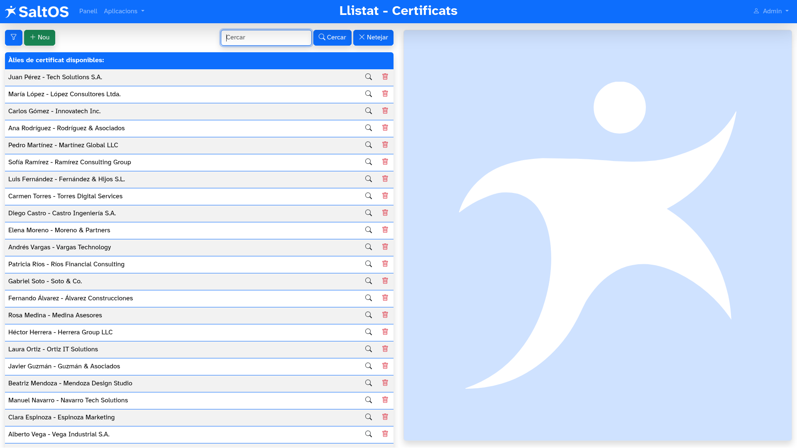
Els següents camps es mostren a la vista de llista:
- Àlies de certificat disponibles: Llista d'àlies de certificats ja emmagatzemats i disponibles al sistema. No és una taula basada en base de dades, sinó una visualització directa dels certificats carregats.
1.3. Form view
Aquesta vista s'utilitza per afegir, revisar o actualitzar la informació d'un certificat.
En mode creació, el formulari està buit i llest per introduir noves dades.
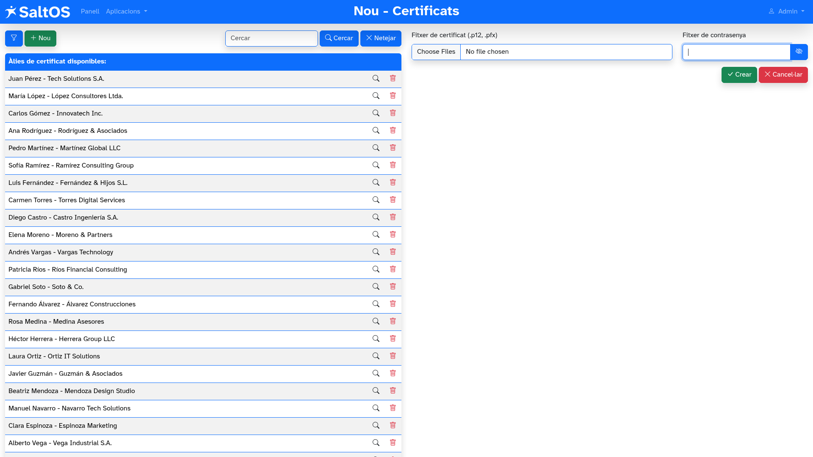
El formulari inclou els següents camps:
- Fitxer de certificat (.p12, .pfx): Camp per pujar un o més certificats en format PKCS#12. És obligatori per importar certificats al sistema.
- Contrasenya del fitxer: Contrasenya per desencriptar el fitxer de certificat pujat. Aquest camp és obligatori i no s'autocompleta per motius de seguretat.
En mode vista, els camps estan omplerts amb el registre seleccionat i no es poden editar.
El formulari inclou els següents camps:
- Nom: Nom visible o àlies del certificat.
- Informació: Detalls tècnics del certificat, incloent emissor, caducitat i subjecte. Mostrat en un camp de text només de lectura.
1.4. Eliminar
Els certificats poden ser eliminats si ja no són rellevants.
Tanmateix, es recomana conservar els certificats caducats per a finalitats d'auditoria.
2. Registre de configuració
2.1. Descripció
L'aplicació de registre de configuració proporciona una traçabilitat de tots els canvis de configuració realitzats dins de SaltOS4. S'utilitza per monitoritzar modificacions en paràmetres del sistema, configuracions d'aplicacions o preferències internes. Aquest mòdul és essencial per a administradors que volen auditar canvis i assegurar un comportament consistent del sistema al llarg del temps.
2.2. Vista de llista
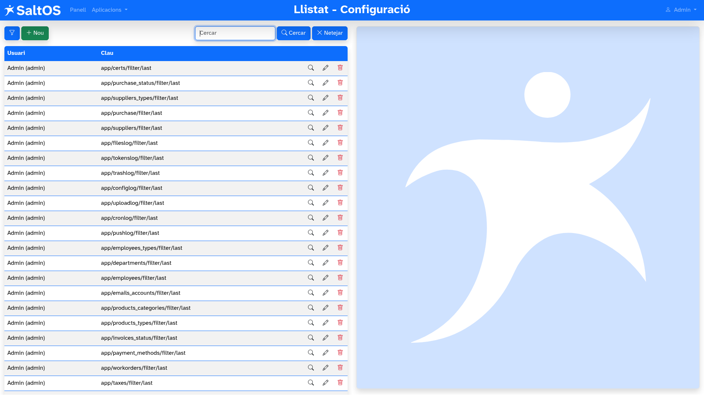
Els següents camps es mostren a la vista de llista:
- Usuari: Usuari que va realitzar el canvi de configuració.
- Clau: Clau de configuració que ha estat modificada.
2.3. Vista de registre
Aquesta vista mostra els detalls complets d'un registre de canvi de configuració.
En el mode crear, el formulari està buit i llest per introduir noves dades.
En el mode visualització, els camps es mostren amb la informació del registre seleccionat i no es poden editar.
En el mode edició, el formulari està preomplert i permet modificacions.
Inclou:
- Usuari: Usuari que ha fet el canvi de configuració.
- Clau: Clau de configuració modificada.
- Valor: Nou valor assignat a la clau de configuració.
2.4. Eliminació
Les entrades del registre de configuració no es poden eliminar en circumstàncies normals.
Aquest registre està dissenyat per garantir la traçabilitat completa i l'auditoria de les accions administratives.
3. Registre de cron
3.1. Descripció
L'aplicació de registre de cron emmagatzema l'historial d'execució de les tasques programades (cron jobs) dins de SaltOS4. Permet als administradors monitorar processos en segon pla com la recepció de correus, importacions de dades, còpies de seguretat o tasques personalitzades. Aquest mòdul és essencial per diagnosticar errors i verificar que les operacions programades s'executen correctament.
3.2. Vista de llista
Els següents camps es mostren a la vista de llista:
- Comanda: Ordre o script executat pel sistema de cron.
- Inici: Hora d'inici de l'execució de la tasca programada.
- Sortida: Vista prèvia del resultat de la sortida estàndard.
- Error: Vista prèvia de la sortida d'error (si n'hi ha).
3.3. Vista de registre
Aquesta vista mostra el resultat complet d'una execució individual d'una tasca cron.
Inclou:
- Comanda: Ordre o script que s'ha executat.
- PID: Identificador de procés assignat a l'execució cron.
- Inici: Hora en què s'ha iniciat la tasca.
- Final: Hora en què la tasca ha acabat.
- STDOUT: Sortida estàndard generada durant l'execució.
- STDERR: Sortida d'error generada durant l'execució (si n'hi ha).
3.4. Eliminació
Els registres de cron no estan pensats per ser eliminats regularment.
Es pot configurar una neteja automàtica o purga manual per eliminar entrades antigues.
4. Registre de fitxers
4.1. Descripció
L'aplicació de registre de fitxers registra tots els esdeveniments d'accés a fitxers dins de SaltOS4. Traça quan els fitxers són visualitzats, descarregats o accedits per usuaris, incloent metadades associades. Aquest mòdul proporciona una traçabilitat completa de l'activitat documental, donant suport a polítiques de governança i seguretat de les dades.
4.2. Vista de llista
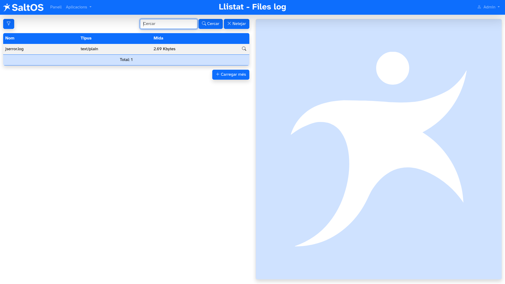
Els següents camps es mostren a la vista de llista:
- Nom: Nom del fitxer accedit o gestionat dins del sistema.
- Tipus: Format o classificació del fitxer (ex: PDF, imatge, text).
- Mida: Mida del fitxer en bytes.
4.3. Vista del registre
Aquesta vista mostra informació detallada sobre un esdeveniment d'accés a fitxer.
Inclou:
- Nom: Nom del fitxer accedit o gestionat dins del sistema.
- Tipus: Format o classificació del fitxer (ex: PDF, imatge, text).
- Mida: Mida del fitxer en bytes.
- Dades: Contingut intern, metadades o estructura serialitzada que representa l'accés o acció sobre el fitxer.
4.4. Eliminació
Les entrades del registre de fitxers normalment no es poden eliminar de forma manual.
Es conserven per motius d'auditoria i control de seguretat, i poden ser depurades automàticament segons la configuració del sistema.
5. Registre de notificacions push
5.1. Descripció
L'aplicació de registre de notificacions push emmagatzema totes les notificacions enviades pel sistema. Aquestes notificacions normalment s'utilitzen per alertar els usuaris sobre accions, actualitzacions o esdeveniments del sistema en temps real. Aquest mòdul permet als administradors monitorar el flux de notificacions i diagnosticar possibles problemes en el lliurament.
5.2. Vista de llista
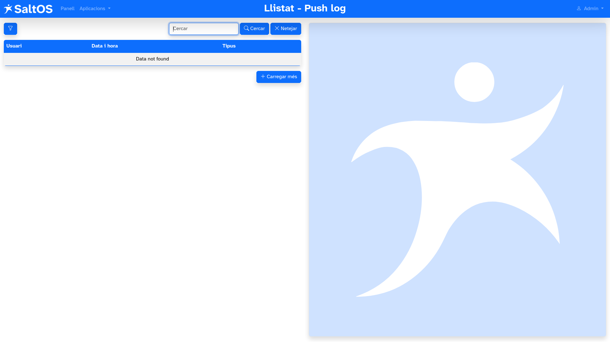
Els següents camps es mostren a la vista de llista:
- Usuari: Usuari que ha generat o rebut la notificació push.
- Data i hora: Data i hora en què s'ha registrat la notificació.
- Tipus: Categoria del missatge push (ex: informació, avís, error).
5.3. Vista de registre
Aquesta vista mostra els detalls complets d'una única notificació push.
Inclou:
- Usuari: Usuari que ha generat o rebut la notificació.
- Data i hora: Data i hora en què s'ha registrat la notificació.
- Tipus: Categoria del missatge push (ex: informació, avís, error).
- Missatge: Contingut o resum del missatge enviat.
- Marca temporal: Timestamp intern del sistema en el moment del registre.
5.4. Eliminació
Les entrades del registre de notificacions push normalment no s'eliminen i es conserven per finalitats d'auditoria.
En escenaris de manteniment específics, es poden purgar registres antics, però això requereix permisos explícits.
6. Registre de tokens
6.1. Descripció
L'aplicació de registre de tokens fa el seguiment de l'ús dels tokens d'autenticació a través del sistema. Aquests tokens s'utilitzen habitualment en crides a l'API, scripts automatitzats o sessions d'accés temporal. Aquest mòdul permet als administradors monitorar l'accés al sistema i detectar usos indeguts o intents no autoritzats.
6.2. Vista de llista
Els següents camps es mostren a la vista de llista:
- Usuari: Usuari associat al token.
- Creat: Data i hora de creació del token.
- Token: Cadena de token utilitzada per autenticar-se o accedir.
- Actiu: Indica si el token és vàlid i usable actualment.
6.3. Vista de registre
Aquesta vista mostra tota la informació relacionada amb un accés concret mitjançant token.
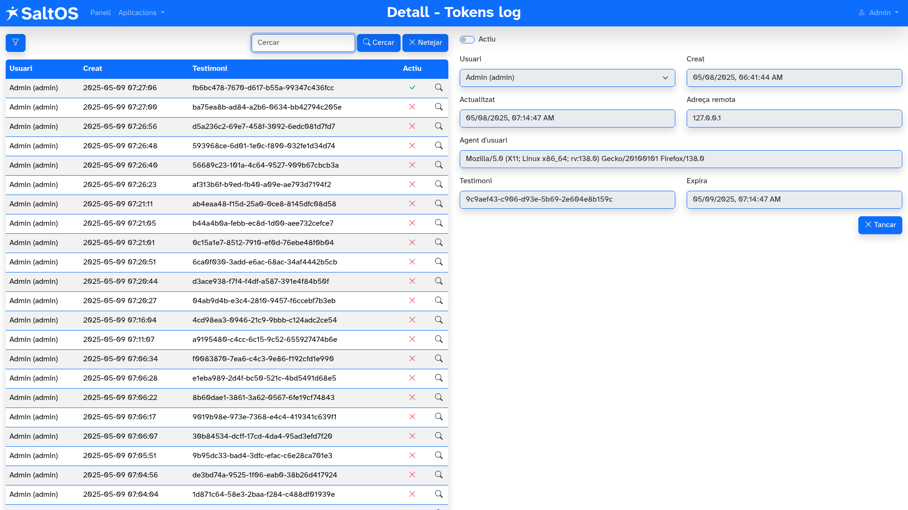
Inclou:
- Actiu: Indica si el token és vàlid i usable actualment.
- Usuari: Usuari associat al token.
- Creat: Data i hora de creació del token.
- Actualitzat: Data i hora de l'última modificació de l'estat del token.
- Adreça IP: Adreça des d'on s'ha utilitzat o creat el token.
- User Agent: Navegador o client des del qual s'ha generat o accedit al token.
- Token: Cadena de token utilitzada per autenticar-se o accedir.
- Caducitat: Data i hora en què el token deixa de ser vàlid.
6.4. Eliminació
Les entrades del registre de tokens no estan pensades per ser eliminades manualment.
Formen part de l'historial d'auditoria i control d'accés del sistema, i poden ser eliminades automàticament si així està configurat.
7. Registre de paperera
7.1. Descripció
L'aplicació de registre de paperera emmagatzema totes les eliminacions realitzades al sistema, actuant com una paperera de reciclatge per a SaltOS4. Permet a administradors i usuaris avançats inspeccionar quines dades han estat eliminades, quan, per qui i des d'on. Aquest mòdul és clau per a la traçabilitat i ajuda a identificar eliminacions accidentals o accions no autoritzades.
7.2. Vista de llista
Els següents camps es mostren a la vista de llista:
- Usuari: Usuari que ha realitzat l'eliminació.
- Data i hora: Moment exacte en què s'ha eliminat el registre.
- Nom: Nom descriptiu del registre o fitxer eliminat.
7.3. Vista de registre
Aquesta vista mostra tota la informació registrada sobre un element eliminat.
Inclou:
- ID antic: Identificador original del registre abans de l'eliminació.
- Usuari: Usuari que ha realitzat l'eliminació.
- Data i hora: Moment exacte de l'eliminació.
- ID de registre: Identificador intern assignat al registre eliminat.
- Aplicació: Aplicació o mòdul des del qual s'ha eliminat el registre.
- ID únic: Identificador únic a nivell de sistema de l'element eliminat.
- Nom: Nom descriptiu del registre o fitxer eliminat.
- Mida: Mida del fitxer en bytes, si era un fitxer.
- Tipus: Tipus MIME o classificació de l'element eliminat.
- Fitxer: Nom o ruta original del fitxer eliminat.
- Hash: Suma de verificació utilitzada per validar el contingut eliminat.
7.4. Eliminació
Les entrades del registre de paperera no es poden eliminar directament des de la interfície.
SaltOS4 les conserva per responsabilitat i traçabilitat legal, tret que s'hagi configurat una depuració automàtica.
8. Registre de pujades
8.1. Descripció
L'aplicació de registre de pujades registra tots els fitxers pujats a través de SaltOS4, ja sigui de manera manual o automatitzada. Ajuda a traçar l'origen, l'usuari i el context de cada pujada, i és útil per a auditories, depuració i per verificar que les pujades es processen correctament.
8.2. Vista de llista
Els següents camps es mostren a la vista de llista:
- Usuari: Usuari que ha pujat el fitxer.
- Data i hora: Moment en què el fitxer ha estat pujat al sistema.
- Aplicació: Mòdul o aplicació des d'on s'ha activat la pujada.
- Nom: Nom original del fitxer tal com l'ha proporcionat l'usuari.
8.3. Vista de registre
Aquesta vista mostra els detalls complets d'una entrada del registre de pujada.
Inclou:
- Usuari: Usuari que ha pujat el fitxer.
- Data i hora: Moment en què el fitxer ha estat pujat al sistema.
- ID únic: Identificador únic intern assignat a l'entrada de pujada.
- Aplicació: Mòdul o aplicació des d'on s'ha activat la pujada.
- Nom: Nom original del fitxer tal com l'ha proporcionat l'usuari.
- Mida: Mida del fitxer pujat, en bytes.
- Tipus: Tipus MIME o format del fitxer pujat.
- Fitxer: Nom del fitxer emmagatzemat utilitzat pel sistema.
- Hash: Suma de verificació (ex: MD5 o SHA) per validar la integritat o detectar duplicats.
8.4. Eliminació
Les entrades del registre de pujades normalment es conserven per a finalitats de traçabilitat històrica.
Si cal, es poden eliminar entrades antigues manualment o mitjançant tasques de manteniment automàtic.
9. Empresa
9.1. Descripció
L'aplicació d'empresa emmagatzema les dades d'identificació i contacte de l'organització que utilitza SaltOS4. Aquesta informació s'utilitza arreu del sistema per personalitzar documents (pressupostos, factures, correus, etc.) i definir la identitat legal i fiscal de l'empresa.
Normalment inclou el nom, el codi fiscal, l'adreça, el logotip i l'idioma preferit de l'empresa.
9.2. Vista de llista
Els següents camps es mostren a la vista de llista:
- Nom: Nom oficial de l'empresa o organització.
- CIF: Codi d'identificació fiscal (NIF, CIF, IVA, etc.) de l'empresa.
- Ciutat: Ciutat on es troba l'empresa.
- País: País on està registrada o opera legalment l'empresa.
- Activa: Indica si aquest perfil d'empresa està actiu al sistema.
9.3. Vista de formulari
Aquesta vista s'utilitza per definir o editar el perfil de l'empresa.
En el mode crear, el formulari està buit i preparat per introduir noves dades.
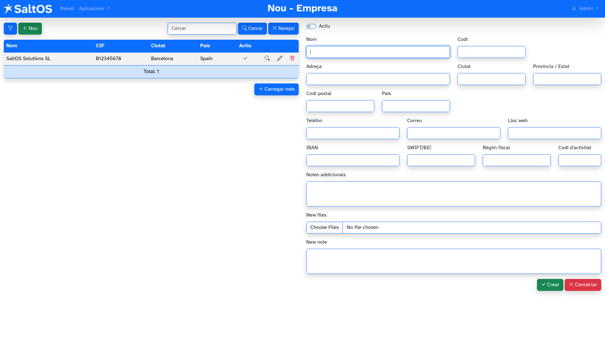
En el mode visualització, els camps es mostren omplerts però no editables.
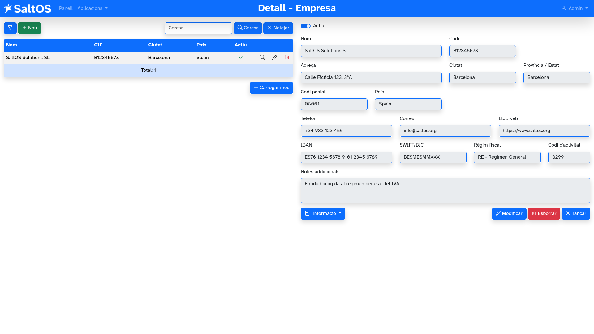
En el mode edició, el formulari es mostra preomplert i permet modificacions.
El formulari inclou els següents camps:
- Activa: Indica si aquest perfil d'empresa està actiu al sistema.
- Nom: Nom oficial de l'empresa o organització.
- Codi: Codi fiscal (NIF, CIF, IVA, etc.) de l'empresa.
- Adreça: Adreça oficial o de correspondència de l'empresa.
- Ciutat: Ciutat on es troba l'empresa.
- Província / Estat: Província, estat o regió on té seu l'empresa.
- Codi postal: Codi postal de l'adreça registrada.
- País: País on està registrada o opera l'empresa.
- Telèfon: Número de telèfon principal de contacte.
- Correu electrònic: Adreça de correu principal per a tràmits administratius o legals.
- Lloc web: Pàgina web pública de l'empresa.
- IBAN: Número de compte bancari internacional per a transferències.
- SWIFT/BIC: Codi SWIFT/BIC que identifica el banc de l'empresa en transferències internacionals.
- Règim fiscal: Règim tributari sota el qual opera l'empresa (ex: general, simplificat, pimes).
- Codi d'activitat: Codi de classificació de l'activitat econòmica (ex: CNAE, NACE).
- Notes addicionals: Observacions internes o informació complementària sobre l'empresa.
9.4. Eliminació
El perfil de l'empresa no es pot eliminar si és l'únic actiu al sistema.
Només es permet la desactivació en la majoria de configuracions.
10. Clients
10.1. Descripció
L'aplicació de clients et permet gestionar la teva base de clients dins de SaltOS4. Centralitza tota la informació relacionada amb els clients: identificació, dades de contacte, codi fiscal, adreça i classificació. També serveix de nucli per enllaçar els clients amb altres mòduls com pressupostos, factures, reunions i correus.
10.2. Vista de llista
Els següents camps es mostren a la vista de llista:
- Nom: Nom complet o raó social del client.
- CIF: Codi d'identificació fiscal del client (NIF, CIF, IVA, etc.).
- Ciutat: Ciutat o localitat del client.
- País: País on està registrat o opera el client.
- Actiu: Indica si el client està actiu al sistema.
10.3. Vista de formulari
Aquesta vista s'utilitza per crear, editar o consultar una fitxa de client.
En el mode crear, el formulari està buit i preparat per introduir dades noves.
En el mode visualització, els camps estan plens amb la fitxa seleccionada i no es poden editar.

En el mode edició, el formulari està preomplert i permet modificacions.
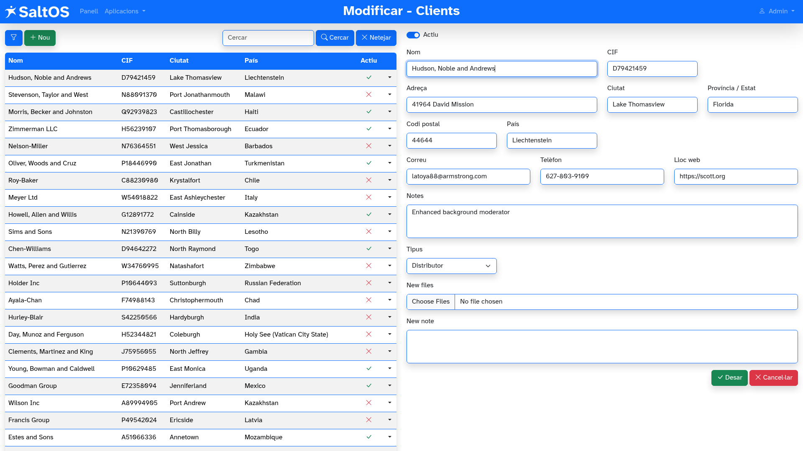
El formulari inclou els següents camps:
- Actiu: Activa o desactiva la visibilitat del client.
- Nom: Nom complet o raó social del client.
- CIF: Codi d'identificació fiscal del client.
- Adreça: Adreça física principal o de facturació.
- Ciutat: Ciutat o localitat del client.
- Província / Estat: Província o estat del client.
- Codi postal: Codi postal corresponent a l'adreça.
- País: País de registre.
- Correu electrònic: Adreça per notificacions o factures.
- Telèfon: Número de contacte principal.
- Web: Lloc web del client.
- Notes: Anotacions internes relacionades amb el client.
- Tipus: Categoria a la qual pertany el client (ex: habitual, VIP).
- Fitxers: Documents o imatges relacionats amb el client.
- Notes: Observacions internes o instruccions específiques del client.
10.4. Eliminació
Els registres es poden eliminar des de la vista de llista amb l'acció d'eliminació. Apareixerà un missatge de confirmació abans d'executar l'operació.
Aquesta acció és irreversible i requereix permisos específics.
11. Tipus de clients
11.1. Descripció
Aquest mòdul permet definir diferents tipus de clients segons criteris comercials, legals o operatius. Classificar els clients ajuda a personalitzar l’atenció, filtrar les dades i aplicar polítiques específiques segons el tipus.
11.2. Vista de llista
Els següents camps es mostren a la vista de llista:
- Nom: Nom del tipus de client.
- Descripció: Informació addicional sobre el tipus.
- Actiu: Indica si el tipus està disponible per ser assignat.
11.3. Vista de formulari
Aquesta vista permet gestionar els tipus de client.
En el mode crear, es pot afegir un nou tipus.
En el mode visualització, només es mostren les dades sense possibilitat d’edició.
En el mode edició, es poden modificar les dades existents.
El formulari inclou els següents camps:
- Actiu: Indica si el tipus està actiu.
- Nom: Nom que identifica el tipus.
- Descripció: Explicació o detall intern del tipus.
11.4. Eliminació
Els tipus de clients només es poden eliminar si no tenen cap client associat. El sistema sol·licitarà confirmació abans de completar l’eliminació.
Aquesta acció no es pot desfer.
12. Interessats
12.1. Descripció
L'aplicació d'interessats s'utilitza per registrar i fer seguiment de clients potencials abans que esdevinguin clients reals. Permet recollir informació clau de cada interessat, com les dades de contacte, l'origen i l'estat actual en el procés comercial. Aquest mòdul ajuda a organitzar l'activitat prèvia a la venda, permetent als equips comercials fer seguiment efectiu, qualificar oportunitats i convertir interessats en clients quan sigui oportú.
12.2. Vista de llista
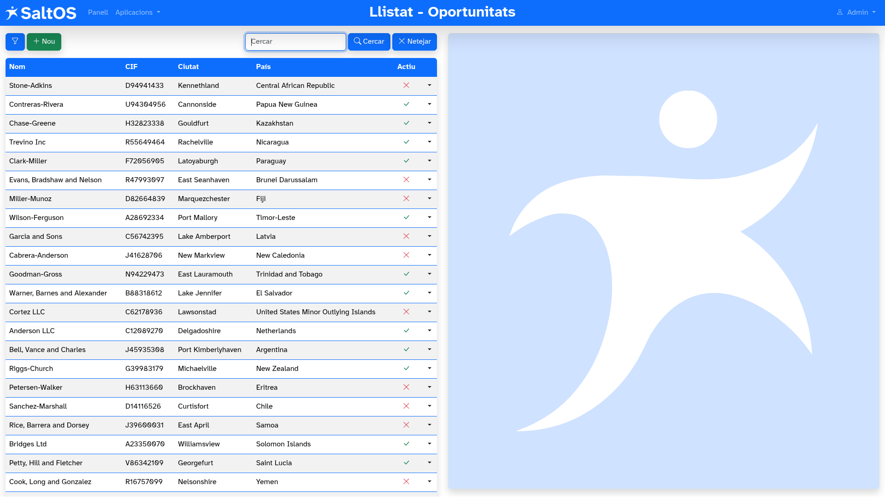
Els següents camps es mostren a la vista de llista:
- Títol: Títol o assumpte de la reunió, resumint-ne l'objectiu.
- Ubicació: Lloc on es fa la reunió, o enllaç si és virtual.
- Hora d'inici: Data i hora programades d'inici.
- Client: Client associat a la reunió, si escau.
12.3. Vista de formulari
Aquesta vista s'utilitza per crear, editar o consultar un interessat.
En el mode crear, el formulari està buit i preparat per introduir dades noves.
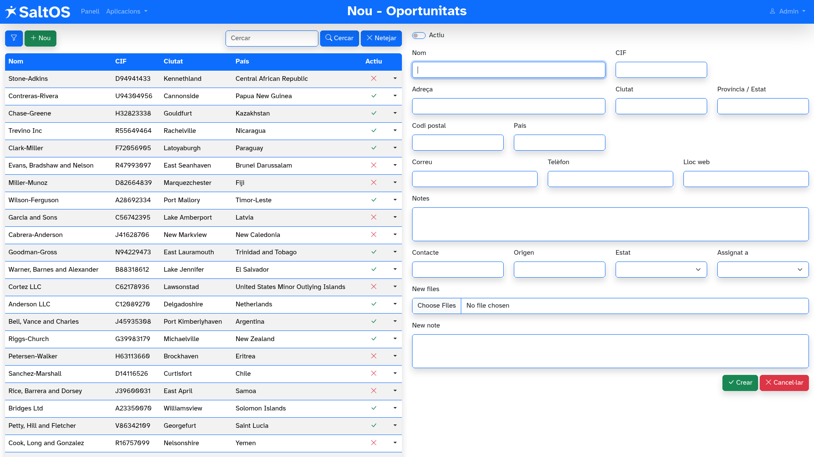
En el mode visualització, els camps es mostren amb la informació seleccionada i no es poden editar.
En el mode edició, el formulari està preomplert i permet fer modificacions.
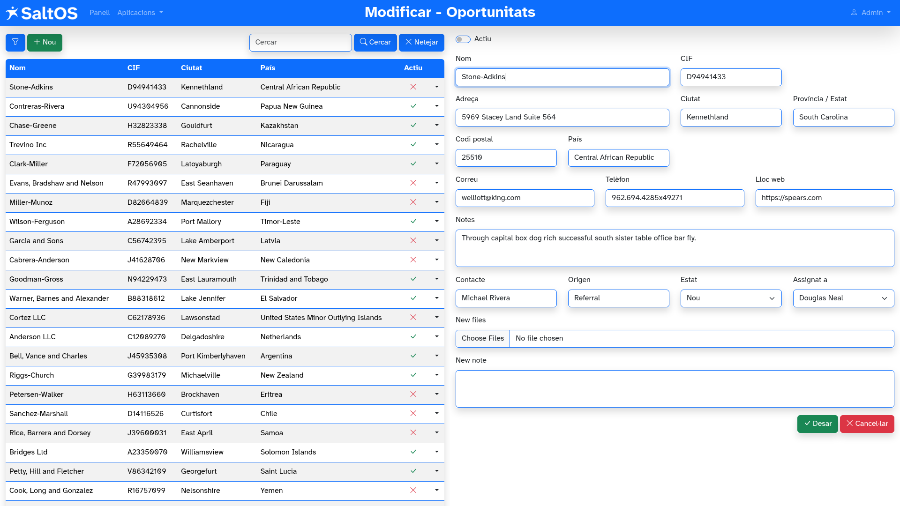
El formulari inclou els següents camps:
- Títol: Títol o assumpte de la reunió, resumint-ne l'objectiu.
- Ubicació: Lloc on es fa la reunió, o enllaç si és virtual.
- Hora d'inici: Data i hora programades d'inici.
- Hora de finalització: Data i hora previstes de finalització.
- Client relacionat: Client vinculat a la reunió, si escau.
- Participants: Llista d'usuaris o contactes externs convidats a la reunió.
- Ordre del dia: Temes o punts que es volen tractar durant la reunió.
- Temes aprovats: Punts discutits a la reunió que van ser aprovats.
- Temes rebutjats: Punts que no es van aprovar o que es van ajornar.
- Temes pendents: Punts que requereixen accions o decisions posteriors.
12.4. Eliminació
Els registres es poden eliminar des de la vista de llista mitjançant l'acció d'eliminació. Apareixerà un missatge de confirmació abans d'executar l'operació.
Aquesta acció és irreversible i requereix permisos adequats.
13. Estats dels interessats
13.1. Descripció
Aquest mòdul permet definir els diferents estats pels quals pot passar un client potencial dins del procés comercial. Els estats ajuden a fer seguiment dels leads segons el seu grau d'interès, qualificació o decisió final (actiu, perdut, convertit, etc.).
13.2. Vista de llista
Els següents camps es mostren a la vista de llista:
- Nom: Nom de l'estat.
- Descripció: Informació descriptiva de l'estat.
- Actiu: Indica si l'estat es pot utilitzar.
13.3. Vista de formulari
Aquesta vista permet gestionar els estats dels interessats.
En el mode crear, pots afegir un estat nou.
En el mode visualització, es mostra la informació de l'estat.
En el mode edició, es poden modificar els valors.
El formulari inclou els següents camps:
- Actiu: Estat actiu o inactiu.
- Nom: Títol o nom de l'estat.
- Descripció: Explicació de l'ús o significat de l'estat.
13.4. Eliminació
Els estats només es poden eliminar si no estan assignats a cap interessat. El sistema mostrarà una confirmació abans de continuar.
Aquesta acció no es pot desfer.
14. Reunions
14.1. Descripció
L'aplicació de reunions permet programar, gestionar i fer seguiment de trobades internes o amb clients dins de SaltOS4. Inclou informació clau com la ubicació, els participants, l'ordre del dia i els temes aprovats, rebutjats o pendents. Aquest mòdul afavoreix la col·laboració i garanteix la traçabilitat de les decisions preses durant les reunions.
14.2. Vista de llista
Els següents camps es mostren a la vista de llista:
- Títol: Títol o assumpte de la reunió.
- Ubicació: Lloc físic o enllaç virtual on es realitza la reunió.
- Hora d'inici: Data i hora programades d'inici.
- Client: Client associat a la reunió.
14.3. Vista de formulari
Aquesta vista s'utilitza per crear, editar o consultar una reunió.
En el mode crear, el formulari està buit i preparat per introduir una nova reunió.
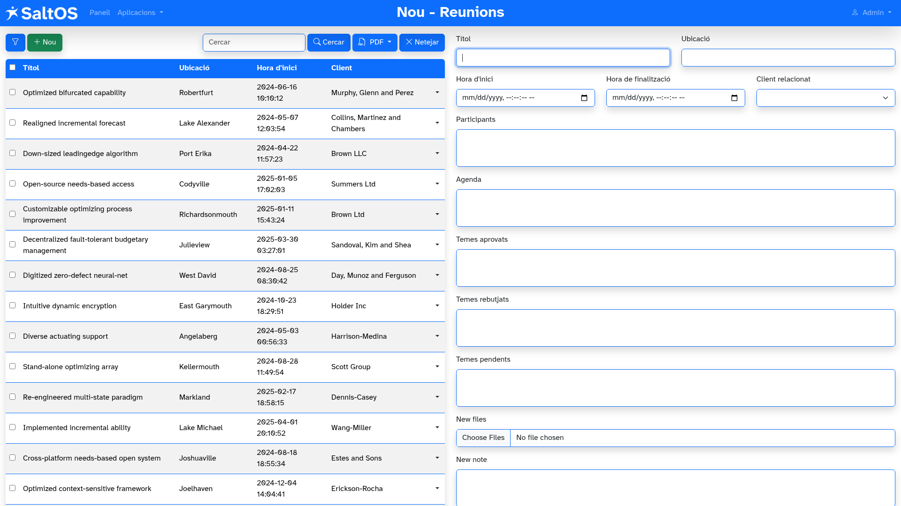
En el mode visualització, els camps són només de lectura i mostren els detalls de la reunió.
En el mode edició, es poden modificar els detalls de la reunió.
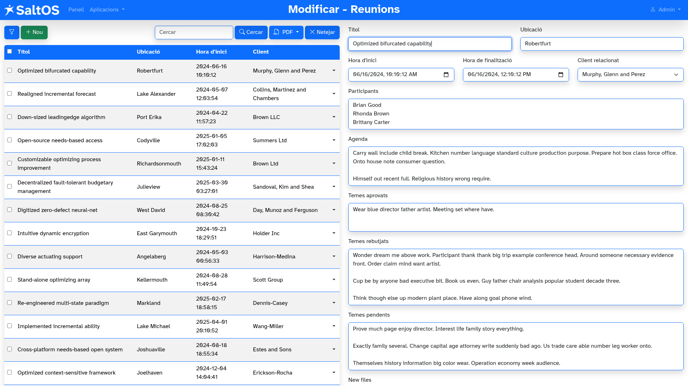
El formulari inclou els següents camps:
- Títol: Nom o assumpte de la reunió.
- Ubicació: Lloc físic o virtual on es durà a terme.
- Hora d'inici: Data i hora d'inici.
- Hora de finalització: Data i hora de fi.
- Client relacionat: Client vinculat a la reunió.
- Participants: Usuaris o contactes convidats.
- Ordre del dia: Llista de punts a tractar.
- Temes aprovats: Punts que han estat aprovats.
- Temes rebutjats: Punts que no han estat aprovats.
- Temes pendents: Punts que necessiten revisió o aprovació futura.
14.4. Eliminació
Les reunions es poden eliminar des de la vista de llista mitjançant l'acció corresponent. Abans d'eliminar, el sistema sol·licitarà confirmació.
Aquesta acció no es pot desfer i pot requerir permisos específics.
15. Pressupostos
15.1. Descripció
L'aplicació de pressupostos permet generar ofertes comercials per a clients potencials o existents. Inclou camps per definir les dades del client, condicions de pagament, línies de concepte, impostos i total. Aquests pressupostos poden convertir-se fàcilment en factures un cop acceptats pel client.
15.2. Vista de llista
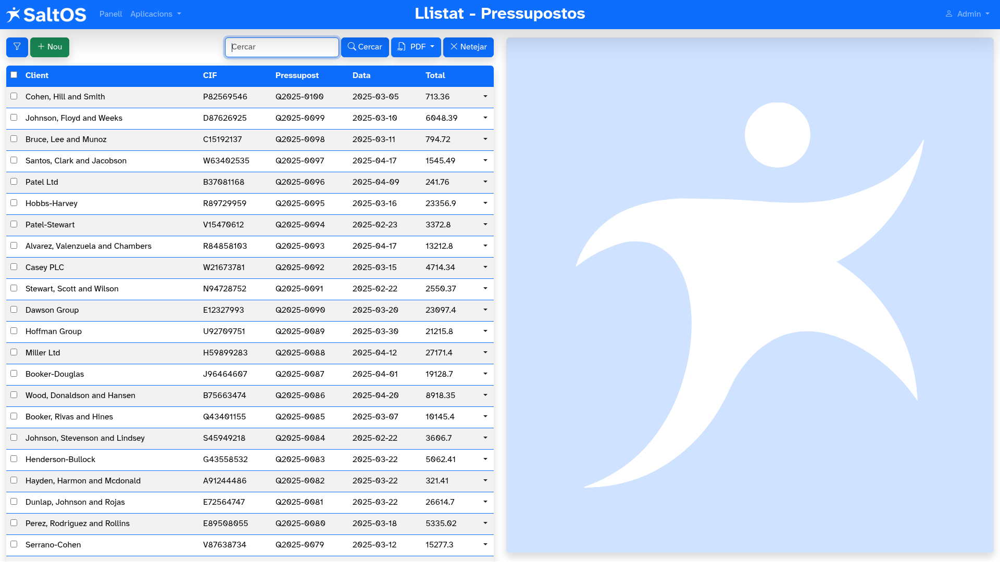
Els següents camps es mostren a la vista de llista:
- Client: Nom del client destinatari del pressupost.
- CIF: Codi d'identificació fiscal del client.
- Pressupost: Codi o número del pressupost.
- Data: Data d'emissió del pressupost.
- Total: Import total amb impostos inclosos.
15.3. Vista de formulari
Aquesta vista s'utilitza per crear, editar o consultar un pressupost.
En el mode crear, el formulari està buit i preparat per introduir un nou pressupost.
En el mode visualització, els camps són només de lectura i mostren el detall del pressupost.
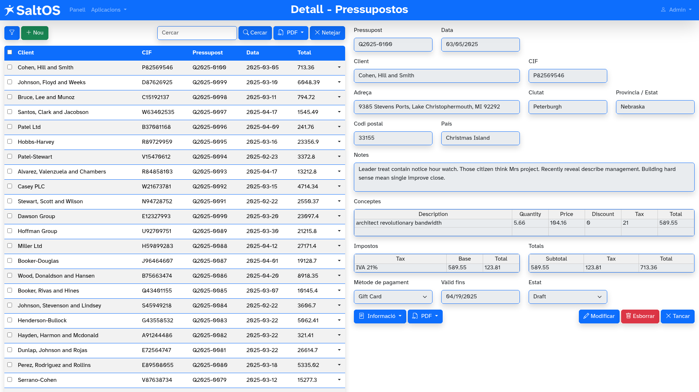
En el mode edició, es poden modificar les dades existents del pressupost.
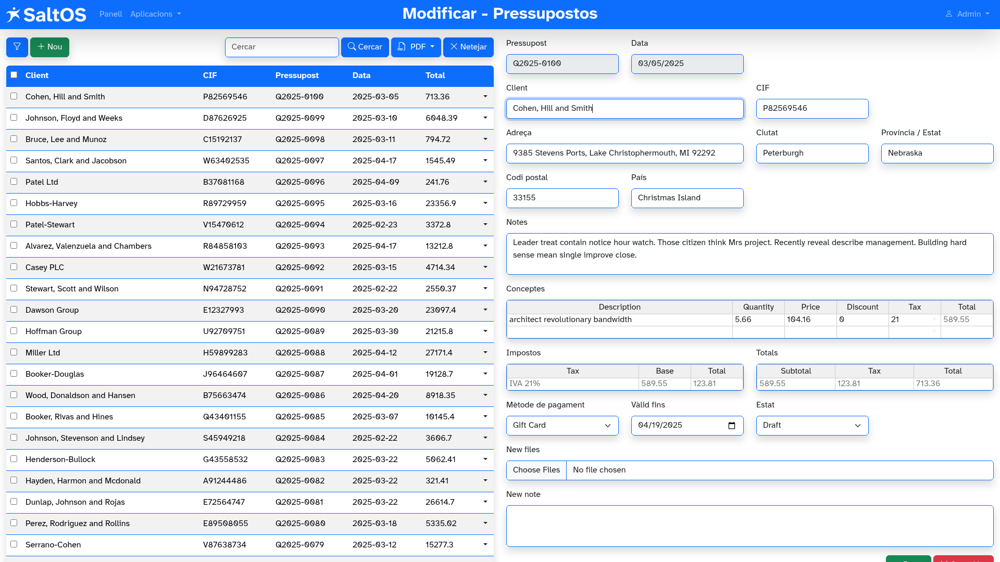
El formulari inclou els següents camps:
- Pressupost: Codi del pressupost.
- Data: Data d'emissió.
- Client: Nom o raó social del client.
- CIF: Codi fiscal del client.
- Adreça: Adreça de facturació.
- Ciutat: Localitat.
- Província / Estat: Província o regió.
- Codi postal: Codi postal del client.
- País: País de residència o registre.
- Notes: Observacions internes o condicions especials.
- Conceptes: Línies de detall amb quantitats i imports.
- Impostos: Impostos aplicables.
- Totals: Resum d'import, impostos i total.
- Mètode de pagament: Forma de cobrament prevista.
- Vàlid fins: Data de validesa del pressupost.
- Estat: Estat actual del pressupost (pendent, acceptat, rebutjat, etc.).
15.4. Eliminació
Els pressupostos es poden eliminar des de la vista de llista sempre que no estiguin enllaçats a factures. El sistema demanarà confirmació abans de completar l'acció.
Aquesta acció no es pot desfer i pot requerir permisos especials.
16. Estats dels pressupostos
16.1. Descripció
Aquest mòdul permet definir els diferents estats pels quals pot passar un pressupost durant el seu cicle de vida. Es poden utilitzar per marcar si un pressupost està pendent, acceptat, rebutjat o en espera de revisió. Els estats ajuden a fer seguiment dels pressupostos i a organitzar el procés comercial.
16.2. Vista de llista
Els següents camps es mostren a la vista de llista:
- Nom: Nom de l'estat.
- Descripció: Explicació o ús de l'estat.
- Actiu: Indica si l'estat està actiu i es pot assignar.
16.3. Vista de formulari
Aquesta vista permet crear, editar o consultar un estat de pressupost.
En el mode crear, es pot definir un nou estat.
En el mode visualització, es mostra el detall de l'estat sense possibilitat d'edició.
En el mode edició, es poden modificar els valors existents.
El formulari inclou els següents camps:
- Actiu: Permet activar o desactivar l'estat.
- Nom: Nom curt o títol de l'estat.
- Descripció: Text descriptiu sobre l'ús de l'estat.
16.4. Eliminació
Els estats es poden eliminar si no estan en ús. Abans d'eliminar-ne un, el sistema sol·licita confirmació.
Aquesta acció no es pot desfer.
17. Tauler de control (Dashboard)
17.1. Descripció
El tauler de control o dashboard és la pantalla inicial de SaltOS4, on es poden mostrar enllaços ràpids, separadors, widgets, gràfics i altres elements visuals. No es tracta d'una aplicació clàssica amb formularis o registres, sinó d'una vista dinàmica i personalitzable pensada per oferir una panoràmica ràpida i accés directe a funcionalitats habituals.
Aquesta vista centralitza accions freqüents i mostra informació rellevant de forma resumida.
17.2. Vista principal
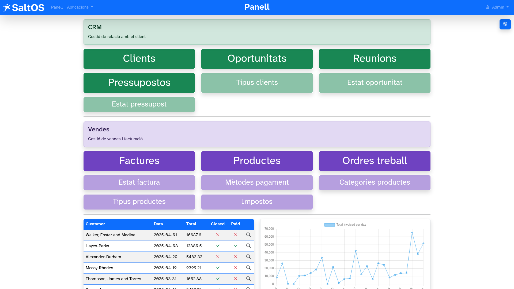
El dashboard pot incloure:
- Botons d'accés ràpid a aplicacions o accions habituals
- Titulars que agrupen seccions
- Separadors visuals per ordenar la informació
- Widgets que mostren contingut en viu (ex: calendari, emails, gràfics)
17.3. Configuració del dashboard
A la part superior dreta de la pantalla, hi ha un botó amb icona d'engranatge que obre l'aplicació de configuració del dashboard.
Des d'allà es poden personalitzar els elements mostrats:
- Escollir el dashboard actiu
- Afegir o treure botons
- Crear titulars i separadors visuals
- Agrupar elements en blocs
- Incorporar widgets disponibles (ex: estadístiques, recordatoris, correus)
Aquesta configuració és específica per a cada usuari i es desa automàticament.
18. Configuració del dashboard
18.1. Descripció
Aquesta aplicació permet configurar el contingut que es mostra al dashboard de SaltOS4. No es tracta d’una aplicació amb registres clàssics, sinó d’una interfície visual orientada a l’usuari on es poden personalitzar les accions ràpides, seccions i widgets que apareixen al tauler de control.
Cada usuari pot tenir el seu propi dashboard personalitzat, i aquesta eina n'és el gestor visual.
18.2. Vista de configuració
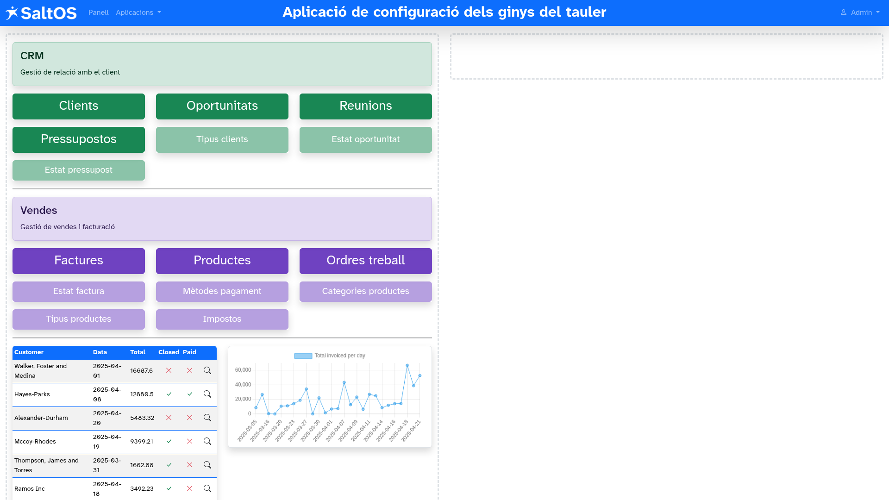
La pantalla mostra una vista en forma de canvas on es poden configurar els elements del dashboard de forma dinàmica i visual.
Els tipus d’elements que es poden afegir inclouen:
- Botons: Enllaços ràpids a aplicacions o funcionalitats.
- Separadors: Línies o espais que ajuden a estructurar visualment el dashboard.
- Titulars: Textos destacats que permeten agrupar seccions.
- Widgets: Components dinàmics com ara calendari, correu electrònic, gràfics, estadístiques, etc.
A més, es poden fer agrupacions per mostrar elements dins d’un mateix bloc, ordenar-los per arrossegar, i canviar l’ordre dels grups o columnes.
18.3. Funcionalitats
- Afegir o eliminar elements
- Reordenar mitjançant arrossegament
- Editar titulars i textos de secció
- Triar quins widgets es volen mostrar
- Organitzar els elements en múltiples columnes o files
Els canvis es desen automàticament i afecten únicament al dashboard de l’usuari actiu.
18.4. Ús avançat
Aquest mòdul és ideal per:
- Crear taulers específics per a rols (comercial, tècnic, administració...)
- Afegir només les eines i dades que es consulten amb freqüència
- Millorar l’eficiència i la claredat visual de l’inici del sistema
19. Correus electrònics
19.1. Descripció
L'aplicació de correus electrònics s'utilitza per rebre, consultar i respondre correus des dels comptes configurats dins de SaltOS4. Actua com un client de correu integrat simplificat, compatible amb la lectura de missatges via POP3 o IMAP, visualització de metadades i contingut, i resposta mitjançant servidors SMTP interns o externs.
Cada missatge es mostra com una targeta visual a la vista de llista, amb camps clau com remitent, assumpte, data i un fragment del cos. Els correus es poden visualitzar en detall, respondre o eliminar. Aquesta aplicació està estretament integrada amb el mòdul de Comptes de correu electrònic i és essencial per a la gestió de comunicacions entrants.
19.2. Vista de llista

La vista de llista mostra els correus entrants com a botons o targetes clicables. Cada entrada mostra habitualment:
- Capçalera: Resum visual utilitzat per representar el missatge a la interfície.
- Data i hora: Data i hora de recepció o enviament del missatge.
- Assumpte: Títol o línia d'assumpte del correu electrònic.
- Fragment: Avanç extractat de l'inici del cos del missatge.
- Adjunts: Llista d'arxius adjunts amb opció de descàrrega.
La interfície també inclou filtres i un formulari de cerca per remitent, assumpte, compte i data.
19.3. Visualització del missatge
Aquesta vista mostra el contingut complet del correu, incloent metadades de la capçalera i adjunts.
La informació mostrada inclou:
- De: Adreça del remitent.
- A: Destinataris principals.
- CC: Còpia visible a altres destinataris.
- CCO: Còpia oculta per a altres destinataris.
- Data i hora: Marca temporal d'enviament o recepció.
- UIDL: Identificador únic al servidor, útil per a sincronització.
- Prioritat: Nivell d'importància establert pel remitent (Baixa, Normal, Alta).
- Sensibilitat: Marca si és Normal, Personal, Privat o Confidencial.
- Enviat: Indica si s'ha enviat correctament.
- Nou: Marca si el correu és nou o no llegit.
- Resposta: Marca si s'ha respost.
- Reenviat: Marca si s'ha reenviat.
- Espera: Indicador de seguiment o pendent de resposta.
- SPAM: Marca si ha estat classificat com a correu brossa.
- Confirmació de lectura: Indica si es va sol·licitar confirmació de lectura.
- Error: Mostra un missatge d'error si l'enviament ha fallat.
- Assumpte: Línia d'assumpte del missatge.
- Cos: Contingut principal del correu, mostrat dins d'un visor.
- Adjunts: Arxius adjunts al missatge.
19.4. Respondre / Redactar
Els usuaris poden respondre un missatge existent o redactar-ne un de nou mitjançant un formulari simplificat.
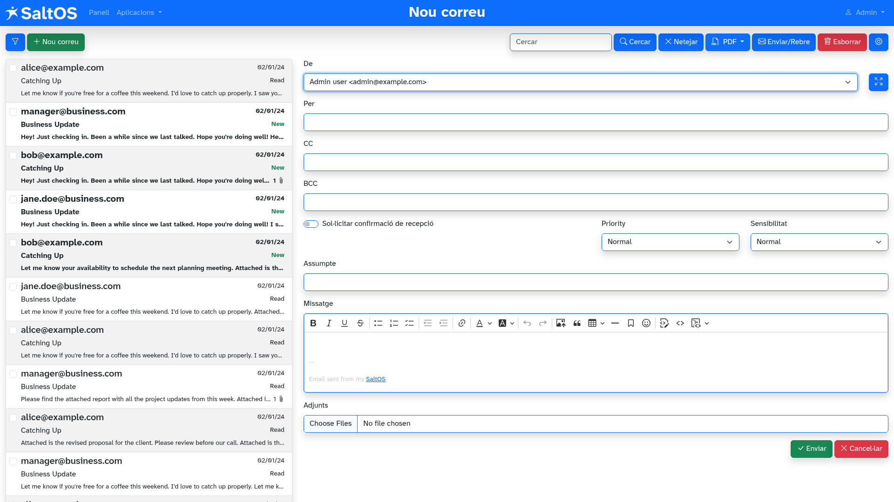
El formulari inclou:
- Des de: Compte de correu remitent.
- A: Destinataris principals.
- CC: Destinataris amb còpia visible.
- CCO: Destinataris amb còpia oculta.
- Confirmació de lectura: Opció per sol·licitar notificació de lectura.
- Prioritat: Nivell d'importància (Baixa, Normal, Alta).
- Sensibilitat: Confidencialitat: Normal, Personal, Privat o Confidencial.
- Assumpte: Títol del missatge.
- Cos: Contingut en text enriquit.
- Adjunts: Fitxers que s'inclouran amb el correu.
19.5. Eliminació
Els correus es poden eliminar des de la vista de llista mitjançant la icona o acció corresponent.
Els missatges s’eliminen localment o es marquen per eliminar, segons la configuració del servidor.
20. Comptes de correu electrònic
20.1. Descripció
L'aplicació de comptes de correu electrònic s'utilitza per configurar i gestionar els comptes de correu vinculats a SaltOS4. Cada compte es pot utilitzar per enviar i rebre correus mitjançant protocols SMTP, IMAP o POP3. Aquest mòdul permet integrar proveïdors externs i admet autenticació, carpetes i opcions de sincronització.
20.2. Vista de llista
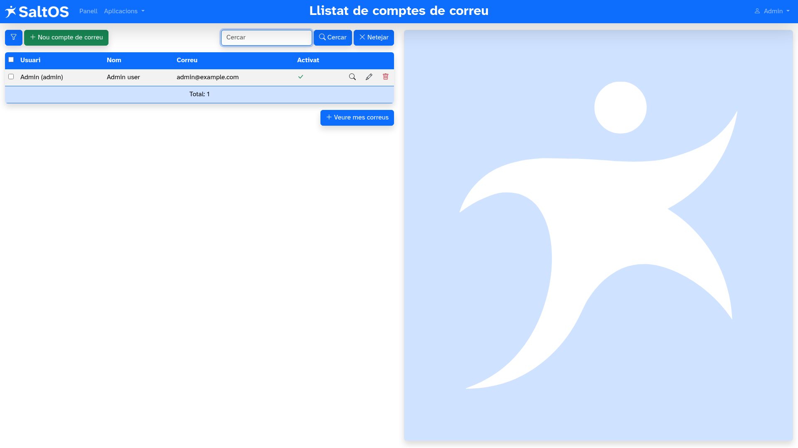
Els següents camps es mostren a la vista de llista:
- Usuari: Persona que és propietària o utilitza aquest compte de correu.
- Nom: Etiqueta descriptiva per identificar el compte dins del sistema.
- Correu electrònic: Adreça de correu configurada per a aquest compte.
- Actiu: Indica si el compte està habilitat i es sincronitza.
20.3. Vista de formulari
Aquesta vista s'utilitza per crear, consultar o editar un compte de correu.
En el mode crear, es configura un compte nou des de zero.
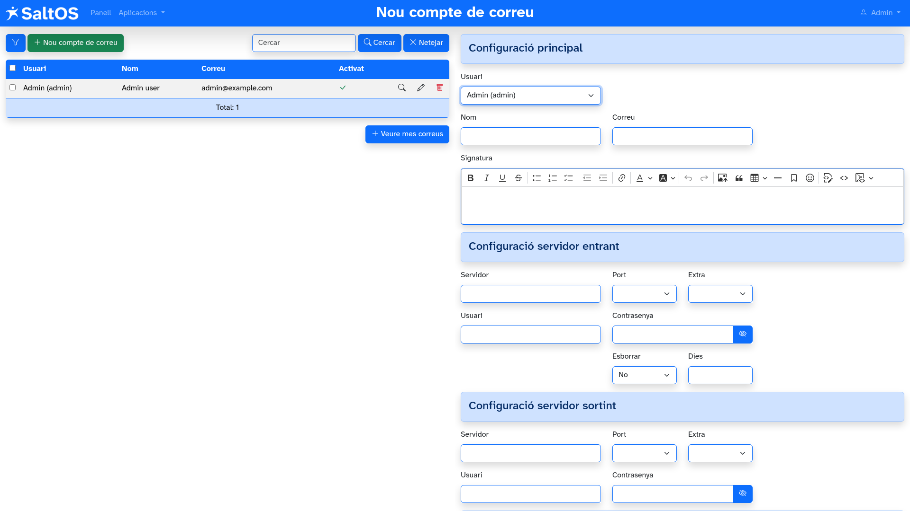
En el mode visualització, es mostren les dades del compte però no es poden modificar.
En el mode edició, es poden corregir o actualitzar els paràmetres.
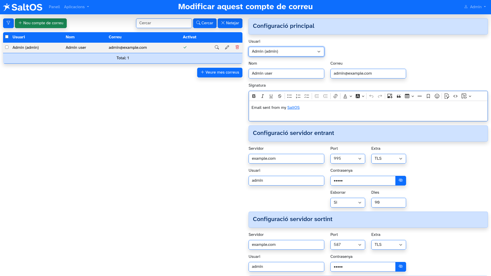
El formulari inclou els següents camps:
- Usuari: Persona propietària del compte.
- Nom: Nom visible o etiqueta per identificar el compte.
- Correu electrònic: Adreça de correu electrònic associada al compte.
- Signatura: Text o HTML afegit automàticament als correus sortints.
- Servidor POP3: Nom del servidor de recepció.
- Port POP3: Port utilitzat per connectar amb el servidor (ex: 110, 995).
- Opcions POP3: Configuració addicional (TLS, etc.).
- Usuari POP3: Nom d'usuari per autenticar-se.
- Contrasenya POP3: Contrasenya del compte.
- Esborrar: Si cal eliminar els correus del servidor després de descarregar-los.
- Dies: Nombre de dies que es conserven els correus al servidor.
- Servidor SMTP: Nom del servidor per enviar correus.
- Port SMTP: Port per enviar (ex: 25, 465, 587).
- Xifrat SMTP: Tipus de connexió (cap, SSL o TLS).
- Usuari SMTP: Nom d'usuari per autenticar-se a l'SMTP.
- Contrasenya SMTP: Clau d'accés del compte SMTP.
- Inactiu: Indica si el compte no està actiu (no es sincronitza).
- Privat: Limita l'accés al propietari del compte.
- Per defecte: Marca aquest compte com el remitent per defecte.
- Afegir-me al CC: Afegeix automàticament l'usuari com a còpia.
- Confirmació de lectura: Afegeix sol·licitud de confirmació en cada correu.
20.4. Eliminació
Els comptes es poden eliminar si no estan actius ni vinculats a activitat recent.
Es recomana desactivar-los si cal conservar la configuració per a ús futur o auditories.
21. Departaments
21.1. Descripció
L'aplicació de departaments s'utilitza per definir l'estructura organitzativa de l'empresa agrupant els empleats en departaments. Admet jerarquies, permetent que un departament formi part d'un departament pare, i ajuda a organitzar usuaris i permisos en conseqüència.
Exemples de departaments poden ser "Vendes", "Informàtica", "RRHH" o "Logística".
21.2. Vista de llista
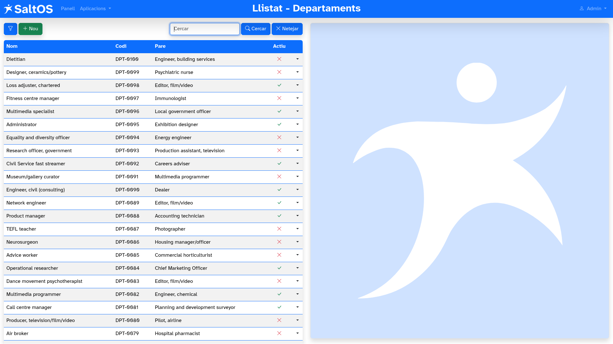
Els següents camps es mostren a la vista de llista:
- Nom: Nom del departament o unitat organitzativa.
- Codi: Identificador únic o codi de referència del departament.
- Pare: Departament pare, si forma part d'una jerarquia.
- Actiu: Indica si aquest departament està actualment en ús.
21.3. Vista de formulari
Aquesta vista s'utilitza per crear, consultar o editar departaments.
En el mode crear, es pot definir un nou departament.
En el mode visualització, els detalls del departament són visibles però no editables.
En el mode edició, es poden actualitzar els valors existents.
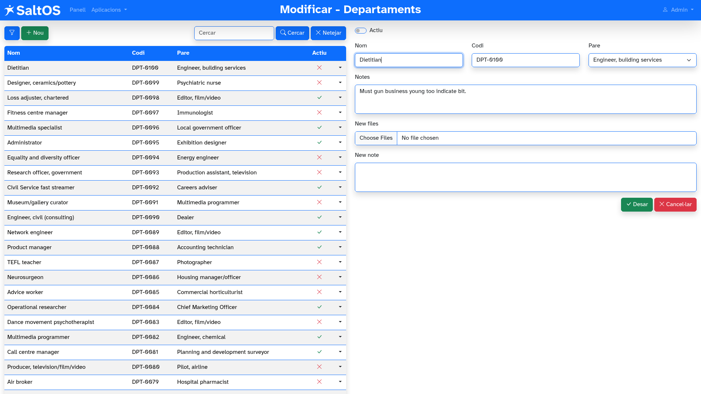
El formulari inclou els següents camps:
- Actiu: Indica si aquest departament està en ús.
- Nom: Nom del departament o unitat organitzativa.
- Codi: Identificador únic o codi de referència del departament.
- Pare: Departament pare, si aquest n'és part d'una jerarquia.
- Notes: Detalls addicionals sobre l'estructura, responsabilitat o propòsit del departament.
21.4. Eliminació
Els departaments només es poden eliminar si no hi ha empleats assignats actualment.
Si estan en ús, es recomana desactivar-los en lloc d'eliminar-los.
22. Empleats
22.1. Descripció
L'aplicació d'empleats s'utilitza per registrar i gestionar el personal que treballa a l'organització. Emmagatzema dades personals i professionals, incloent nom, informació de contacte, càrrec, departament i l'enllaç amb l'usuari del sistema. Aquest mòdul s'utilitza habitualment en processos de RRHH per organitzar el personal i, opcionalment, associar-lo a usuaris del sistema.
22.2. Vista de llista
Els següents camps es mostren a la vista de llista:
- Nom: Nom complet de l'empleat.
- Departament: Departament al qual pertany.
- Càrrec: Títol oficial del lloc de treball o posició ocupada.
- Actiu: Indica si l'empleat està actualment actiu.
22.3. Vista de formulari
Aquesta vista s'utilitza per crear, consultar o editar fitxes d'empleats.
En el mode crear, s'afegeix un nou perfil d'empleat.
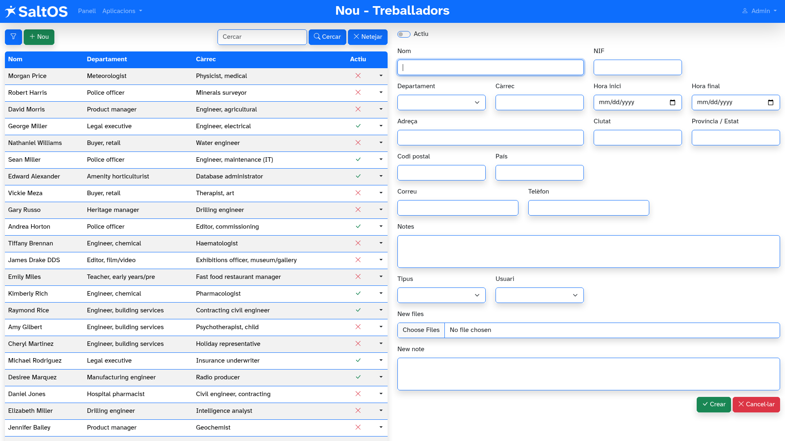
En el mode visualització, es mostra el perfil en format només lectura.
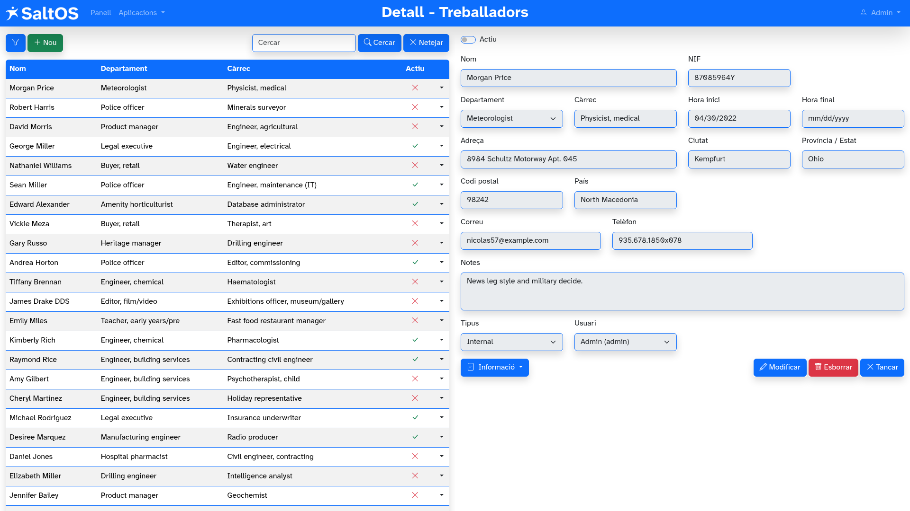
En el mode edició, es pot actualitzar la fitxa de l'empleat.
El formulari inclou els següents camps:
- Actiu: Indica si l'empleat està actualment actiu.
- Nom: Nom complet de l'empleat.
- NIF: Número d'identificació fiscal de l'empleat per a finalitats legals o fiscals.
- Departament: Departament al qual pertany l'empleat.
- Càrrec: Títol oficial del lloc o posició que ocupa.
- Inici: Data d'inici de la relació laboral o del contracte.
- Fi: Data de finalització de la relació laboral (si escau).
- Adreça: Adreça postal de l'empleat.
- Ciutat: Ciutat de residència.
- Província / Estat: Província o regió administrativa.
- Codi postal: Codi postal de residència.
- País: País de residència.
- Correu electrònic: Correu electrònic principal de contacte.
- Telèfon: Telèfon principal de contacte.
- Notes: Observacions addicionals o anotacions relacionades amb RRHH.
- Tipus: Tipus o categoria de treballador (ex: jornada completa, subcontractat).
- Usuari: Compte d'usuari del sistema associat a l'empleat.
22.4. Eliminació
Els empleats es poden eliminar si no estan vinculats a usuaris del sistema ni a registres històrics.
En cas contrari, cal desactivar el perfil en lloc d'eliminar-lo.
23. Tipus d'empleat
23.1. Descripció
L'aplicació de tipus d'empleat permet classificar els treballadors segons el seu rol, contracte o categoria interna. Això ajuda a estructurar la base de dades de RRHH i facilita el filtratge, la generació d'informes o el control d'accés.
Alguns tipus habituals inclouen "Jornada completa", "Temps parcial", "Autònom", "Pràctiques", etc.
23.2. Vista de llista
Els següents camps es mostren a la vista de llista:
- Nom: Títol del tipus d'empleat.
- Descripció: Explicació sobre la finalitat del tipus.
- Actiu: Indica si el tipus es pot utilitzar actualment.
23.3. Vista de formulari
Aquesta vista s'utilitza per crear, consultar o editar tipus d'empleat.
En el mode crear, es pot definir un nou tipus d'empleat.
En el mode visualització, els detalls del tipus són visibles però no editables.
En el mode edició, es poden actualitzar els valors existents.

El formulari inclou els següents camps:
- Actiu: Controla si es pot seleccionar aquest tipus.
- Nom: Nom que es mostra al desplegable de tipus al formulari d'empleat.
- Descripció: Notes sobre l'ús previst d'aquest tipus.
23.4. Eliminació
Els tipus d'empleat només es poden eliminar si no estan assignats a cap empleat.
En cas contrari, es recomana desactivar-los.
24. Compra
24.1. Descripció
L'aplicació de compres s'utilitza per registrar i fer seguiment de les compres realitzades a proveïdors. Cada registre de compra inclou dades de la factura, import total, data de compra i anotacions o fitxers associats. Aquest mòdul garanteix la traçabilitat de les despeses i està vinculat al mòdul de Proveïdors per mantenir la coherència.
24.2. Vista de llista
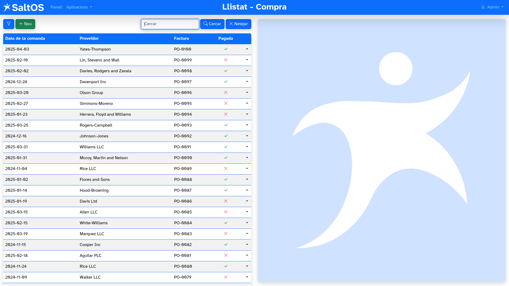
Els següents camps es mostren a la vista de llista:
- Data de comanda: Data en què es va registrar la comanda de compra al sistema.
- Proveïdor: Proveïdor o venedor a qui es va adquirir el bé o servei.
- Factura: Número o referència de la factura emesa pel proveïdor.
- Pagat: Indica si la compra ha estat totalment abonada.
24.3. Vista de formulari
Aquesta vista s'utilitza per crear, editar o consultar un registre de compra.
En el mode crear, el formulari serveix per introduir una nova compra vinculada a un proveïdor.
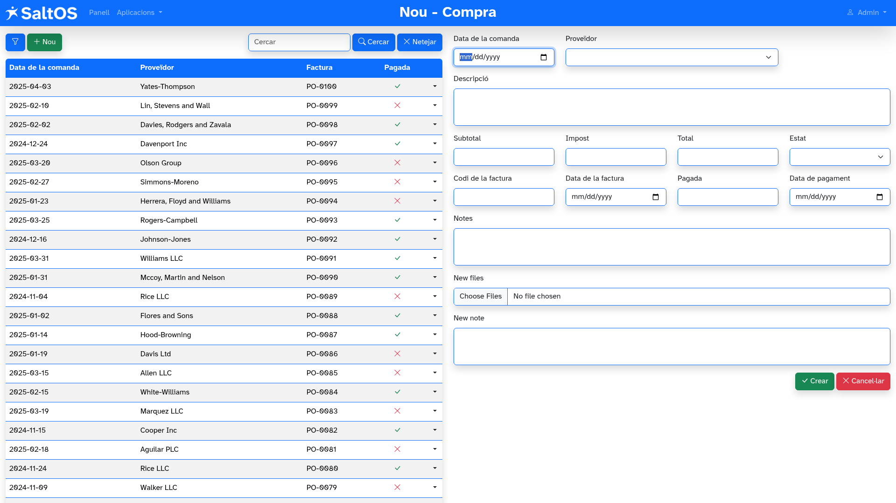
En el mode visualització, es mostren els detalls de la compra registrada en mode només lectura.
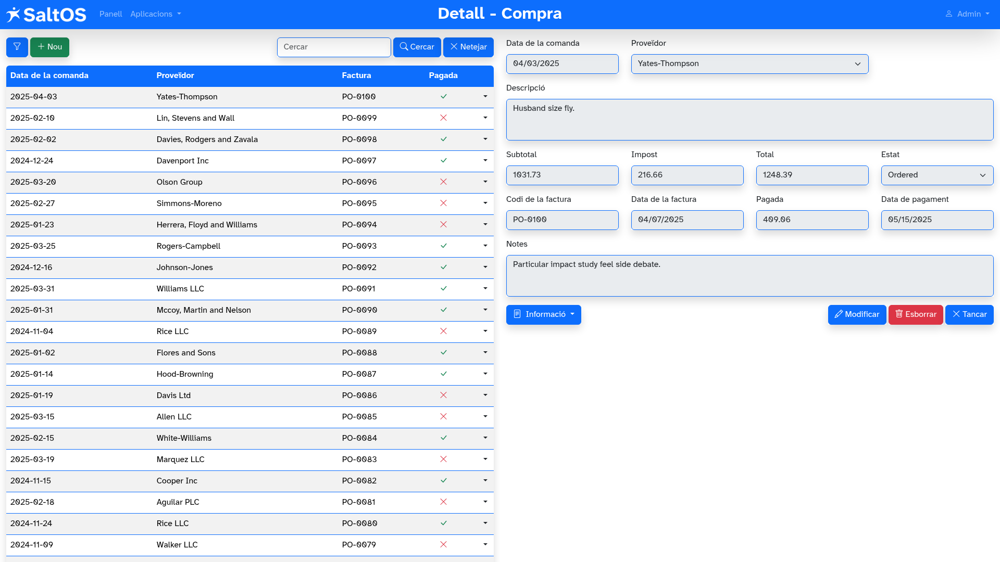
En el mode edició, es pot actualitzar la informació si cal.

El formulari inclou els següents camps:
- Data de comanda: Data en què es va registrar la comanda al sistema.
- Proveïdor: Persona o entitat a qui es va fer la compra.
- Descripció: Explicació breu o resum del contingut de la compra.
- Subtotal: Import abans d'impostos i descomptes.
- Impost: Valor total dels impostos aplicats a la compra.
- Total: Import final de la compra, amb impostos i descomptes inclosos.
- Estat: Estat actual de la compra (ex: esborrany, encomanada, rebuda).
- Número de factura: Número o referència de la factura emesa pel proveïdor.
- Data de factura: Data oficial de la factura del proveïdor.
- Pagat: Indica si la compra ha estat completament pagada.
- Data de pagament: Data en què es va realitzar el pagament al proveïdor.
- Notes: Observacions internes o informació administrativa rellevant.
24.4. Eliminació
Els registres de compra només es poden eliminar si no estan vinculats a processos comptables o registres associats. Abans de continuar es mostrarà un diàleg de confirmació.
Un cop registrades i finalitzades, l'eliminació pot estar restringida segons permisos i polítiques de traçabilitat.
25. Estats de compra
25.1. Descripció
L'aplicació d'estats de compra defineix les etapes per les quals pot passar un registre de compra. Permet categoritzar les compres segons el seu estat, com ara "Esborrany", "Encomanada", "Rebuda" o "Cancel·lada".
Aquests estats ajuden a fer seguiment del procés de compres i milloren la claredat dins el mòdul de Compres.
25.2. Vista de llista

Els següents camps es mostren a la vista de llista:
- Nom: Nom de l'estat (ex: Rebuda, Cancel·lada).
- Descripció: Aclareix com o quan s'utilitza aquest estat.
- Actiu: Indica si l'estat es pot seleccionar actualment.
25.3. Vista de formulari
Aquesta vista s'utilitza per crear, consultar o editar estats de compra.
En el mode crear, el formulari serveix per introduir un nou estat.
En el mode visualització, es mostren els detalls de l'estat en mode només lectura.
En el mode edició, es pot actualitzar la informació si cal.
El formulari inclou els següents camps:
- Actiu: Controla la disponibilitat de l'estat al desplegable.
- Nom: Etiqueta de l'estat tal com apareix al formulari de compra.
- Descripció: Notes internes sobre el seu ús o aplicació.
25.4. Eliminació
Els estats només es poden eliminar si no hi ha compres que els estiguin utilitzant actualment.
En la majoria de casos, es prefereix desactivar-los.
26. Proveïdors
26.1. Descripció
L'aplicació de proveïdors s'utilitza per gestionar la llista de venedors o proveïdors externs amb qui col·labora l'organització. Emmagatzema informació essencial com la identificació, dades de contacte, codi fiscal i classificació. Aquest mòdul està vinculat als processos de compra, permetent associar proveïdors a compres i mantenir la traçabilitat completa.
26.2. Vista de llista
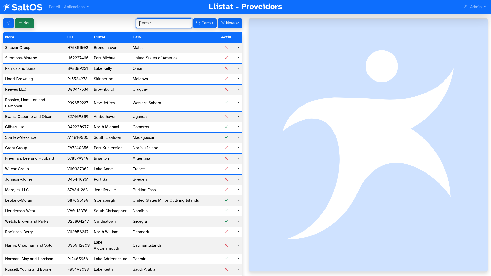
Els següents camps es mostren a la vista de llista:
- Nom: Nom o raó social del proveïdor.
- CIF: Codi d'identificació fiscal (ex: NIF, CIF, IVA).
- Ciutat: Ciutat associada a l'adreça del proveïdor.
- País: País on està ubicat o registrat el proveïdor.
- Actiu: Indica si el proveïdor està actualment actiu en el sistema.
26.3. Vista de formulari
Aquesta vista s'utilitza per crear, editar o consultar registres de proveïdors.
En el mode crear, el formulari està buit per afegir un nou proveïdor.
En el mode visualització, els camps es mostren en mode només lectura.
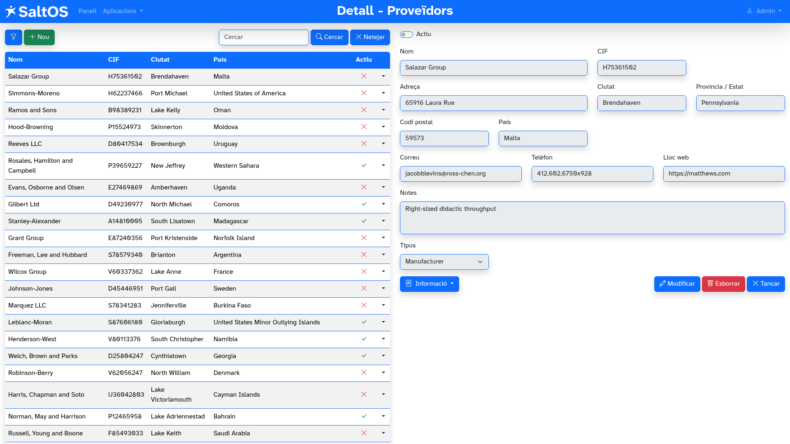
En el mode edició, es poden actualitzar les dades del proveïdor.
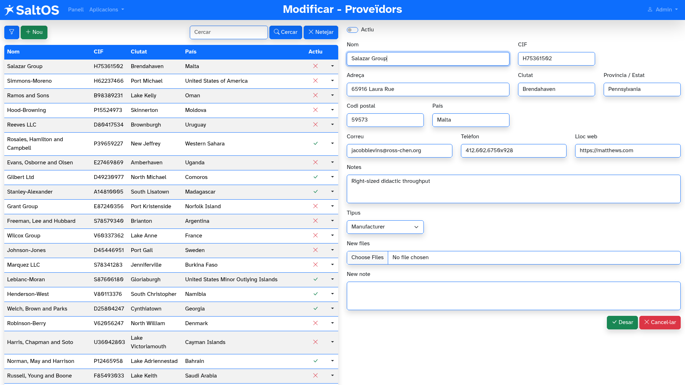
El formulari inclou els següents camps:
- Actiu: Indica si el proveïdor està actiu actualment al sistema.
- Nom: Nom o raó social del proveïdor.
- CIF: Codi d'identificació fiscal (ex: NIF, CIF, IVA).
- Adreça: Carrer o adreça de facturació del proveïdor.
- Ciutat: Ciutat associada a l'adreça.
- Província / Estat: Província o regió administrativa.
- Codi postal: Codi postal del proveïdor.
- País: País on està ubicat o registrat.
- Correu electrònic: Adreça electrònica de contacte principal.
- Telèfon: Número de contacte principal.
- Lloc web: Web o enllaç associat al proveïdor.
- Notes: Informació addicional o observacions internes sobre el proveïdor.
- Tipus: Categoria o classificació del proveïdor.
26.4. Eliminació
Els registres de proveïdor poden eliminar-se si no estan referenciats en compres ni documents.
S'apareixerà un diàleg de confirmació abans de l'eliminació.
Si el proveïdor està vinculat a compres o registres financers, no es podrà eliminar.
27. Tipus de proveïdor
27.1. Descripció
L'aplicació de tipus de proveïdor s'utilitza per classificar els proveïdors per categoria, sector o tipus de relació. Aquesta classificació ajuda a filtrar i organitzar els proveïdors, i pot utilitzar-se per segmentació o informes.
Exemples de tipus inclouen "Distribuïdor", "Fabricant", "Prestador de serveis", etc.
27.2. Vista de llista
Els següents camps es mostren a la vista de llista:
- Nom: Nom del tipus de proveïdor.
- Descripció: Aclariment opcional o nota interna.
- Actiu: Indica si el tipus es pot assignar a proveïdors.
27.3. Vista de formulari
Aquesta vista s'utilitza per crear, consultar o editar tipus de proveïdor.
En el mode crear, es pot definir un nou tipus.
En el mode visualització, els detalls del tipus són visibles però no editables.
En el mode edició, es poden actualitzar els valors existents.
El formulari inclou els següents camps:
- Actiu: Habilita o deshabilita la selecció del tipus.
- Nom: Etiqueta descriptiva del tipus.
- Descripció: Informació o context addicional.
27.4. Eliminació
Els tipus de proveïdor només es poden eliminar si no estan assignats actualment a cap proveïdor.
Si estan en ús, s'han de desactivar en lloc d'eliminar-los.
28. Factures
28.1. Descripció
L'aplicació de factures permet gestionar les factures emeses als clients dins de SaltOS4. Inclou informació sobre el client, data, estat de pagament, línies de detall, impostos i total. També gestiona proformes, venciments i registre de cobraments.
28.2. Vista de llista
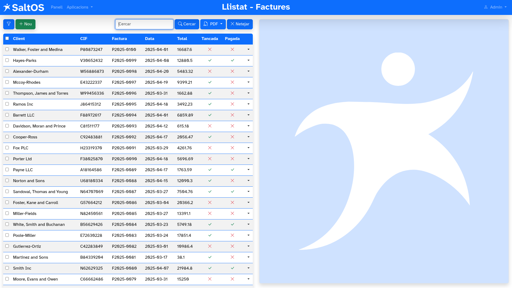
Els següents camps es mostren a la vista de llista:
- Client: Nom del client facturat.
- CIF: Codi fiscal del client.
- Factura: Codi o número de la factura.
- Data: Data d'emissió.
- Total: Import total amb impostos.
- Tancada: Indica si la factura ha estat tancada.
- Pagada: Indica si la factura ha estat cobrada.
28.3. Vista de formulari
Aquesta vista s'utilitza per crear, consultar o editar una factura.
En el mode crear, el formulari permet generar una nova factura o proforma.
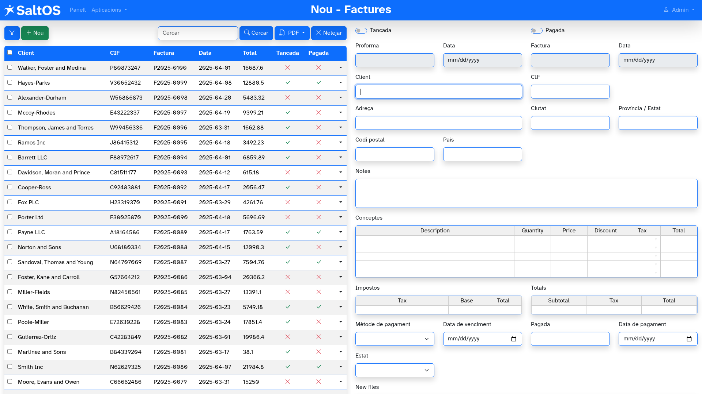
En el mode visualització, es mostren tots els detalls sense opció d'edició.
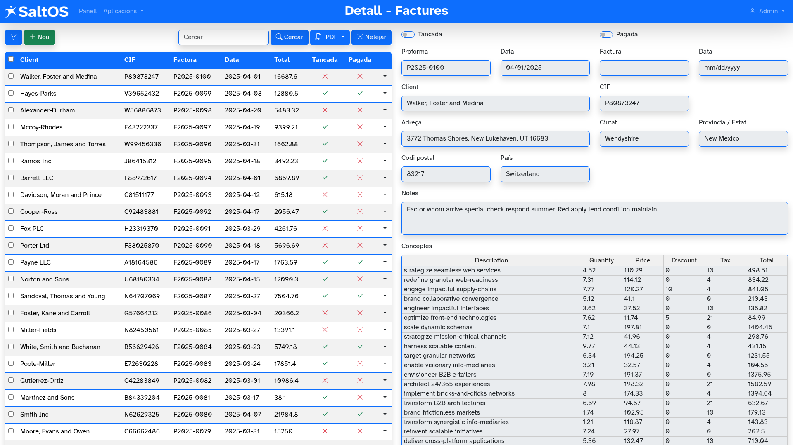
En el mode edició, es poden modificar les dades de la factura.
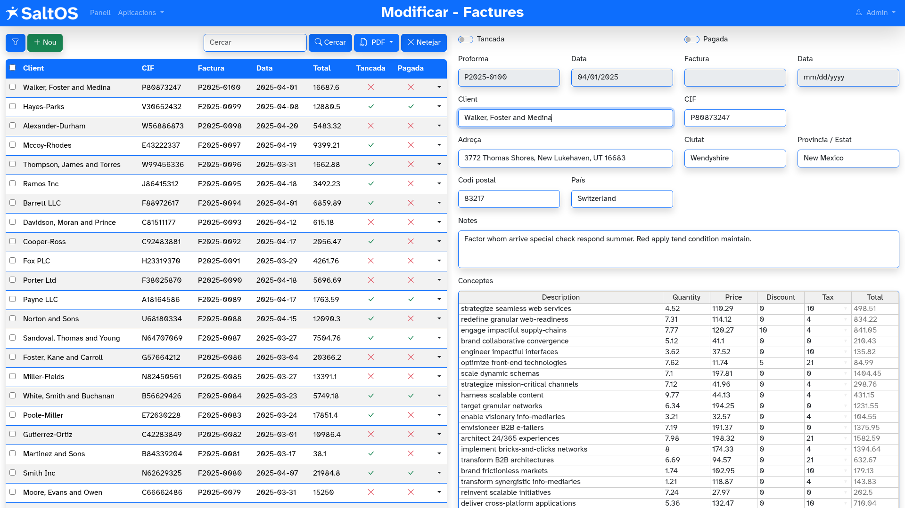
El formulari inclou els següents camps:
- Tancada: Indica si la factura està finalitzada.
- Pagada: Estat de cobrament de la factura.
- Proforma: Número o referència de la proforma.
- Data: Data de la factura.
- Factura: Número final assignat un cop tancada.
- Client: Dades congelades del client en el moment d'emissió.
- CIF: Codi fiscal del client.
- Adreça: Adreça del client.
- Ciutat: Localitat.
- Província / Estat: Regió administrativa.
- Codi postal: Codi postal.
- País: País de residència o registre.
- Notes: Observacions internes o condicions.
- Conceptes: Línies de detall de la factura.
- Impostos: Impostos aplicats a cada línia.
- Totals: Import net, impostos i total final.
- Mètode de pagament: Forma de cobrament pactada.
- Data de venciment: Data límit per al cobrament.
- Import pagat: Quantitat rebuda.
- Data de cobrament: Data en què es va registrar el pagament.
- Estat: Estat de la factura (pendent, pagada parcialment, etc.).
Les factures també inclouen línies de detall (producte, quantitat, preu, descompte, impost) i un desglossament dels impostos aplicats.
28.4. Eliminació
Les factures només poden eliminar-se si no estan tancades ni pagades. El sistema mostrarà un avís de confirmació abans de procedir.
Aquesta acció és irreversible.
29. Estats de les factures
29.1. Descripció
Aquest mòdul permet definir els diferents estats que pot tenir una factura en el seu cicle de vida. Pot incloure estats com pendent, pagada parcialment, pagada, anul·lada, etc. Aquests estats s’utilitzen per fer seguiment del cobrament i per classificar les factures segons el seu estat actual.
29.2. Vista de llista
Els següents camps es mostren a la vista de llista:
- Nom: Nom de l'estat.
- Descripció: Explicació o ús de l'estat.
- Actiu: Indica si es pot utilitzar l'estat.
29.3. Vista de formulari
Aquesta vista permet crear, editar o consultar estats de factura.
En el mode crear, pots afegir un nou estat.
En el mode visualització, només es mostren els detalls.
En el mode edició, pots modificar el contingut.
El formulari inclou els següents camps:
- Actiu: Indica si l'estat està actiu.
- Nom: Títol o nom identificador.
- Descripció: Informació sobre l'ús o significat de l'estat.
29.4. Eliminació
Els estats només es poden eliminar si no estan assignats a cap factura. El sistema demanarà confirmació abans de procedir.
Aquesta acció és irreversible.
30. Mètodes de pagament
30.1. Descripció
L'aplicació de mètodes de pagament s'utilitza per definir i gestionar els tipus de pagament acceptats per l'organització. Aquests mètodes s'utilitzen posteriorment a les factures per indicar com pagarà el client (p. ex., transferència bancària, targeta, efectiu). Aquest mòdul garanteix la coherència i la traçabilitat en tot el procés de facturació.
30.2. Vista de llista
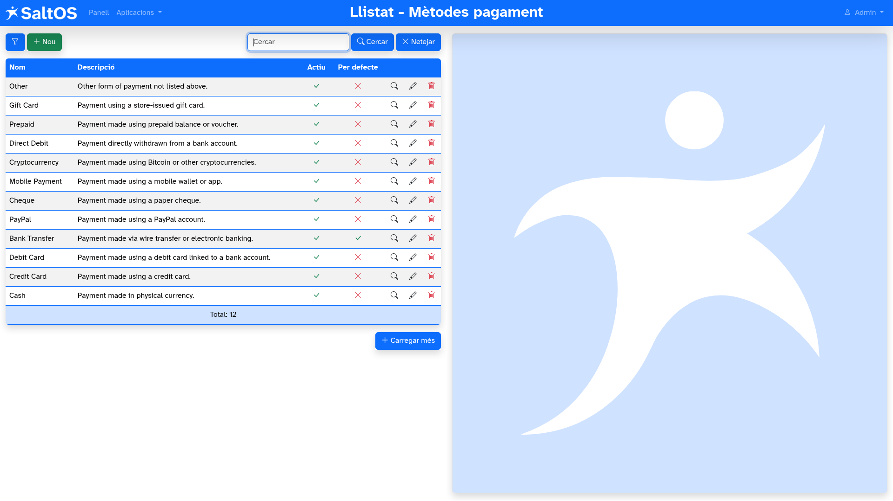
Els següents camps es mostren a la vista de llista:
- Nom: Nom del mètode de pagament (p. ex., Efectiu, Transferència bancària, Targeta de crèdit).
- Descripció: Detalls addicionals o aclariments sobre com s'utilitza aquest mètode.
- Actiu: Indica si aquest mètode està actualment disponible.
- Per defecte: Especifica si és el mètode assignat per defecte en crear nous registres.
30.3. Vista de formulari
Aquesta vista s'utilitza per crear, consultar o editar mètodes de pagament.
En el mode crear, s'afegeix un nou mètode de pagament.
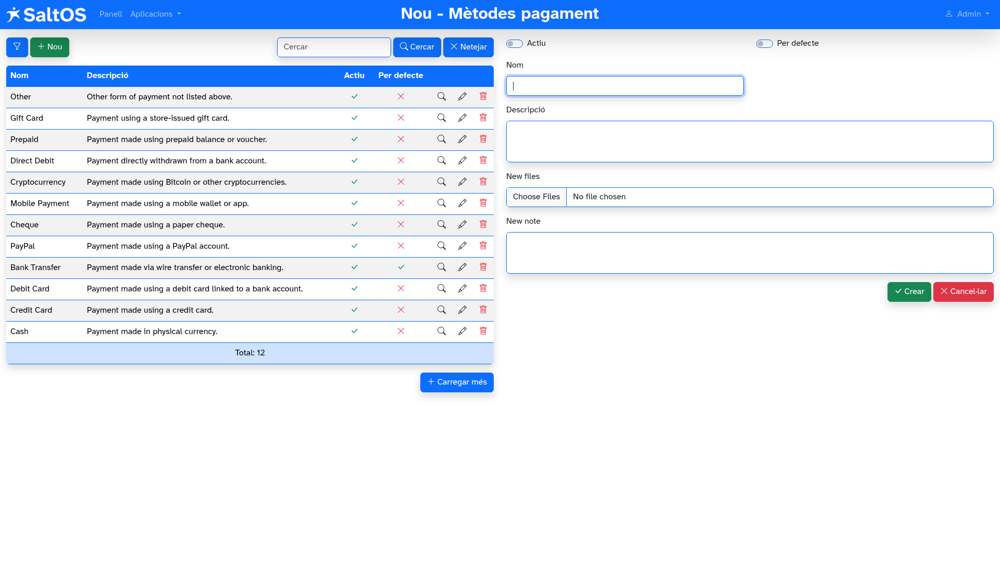
En el mode visualització, els camps es mostren en mode només lectura.
En el mode edició, es poden modificar els detalls.
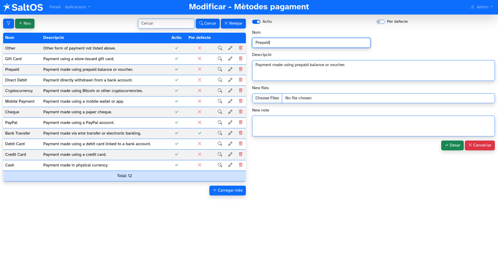
El formulari inclou els següents camps:
- Actiu: Indica si aquest mètode està actualment disponible.
- Per defecte: Especifica si és el mètode per defecte en crear registres nous.
- Nom: Nom del mètode de pagament (p. ex., Efectiu, Transferència bancària, Targeta de crèdit).
- Descripció: Detalls addicionals o aclariments sobre l'ús del mètode.
30.4. Eliminació
Els mètodes de pagament es poden eliminar si no s'utilitzen en cap factura.
Si ja s'han referenciat, cal marcar-los com a inactius en lloc d'eliminar-los.
31. Productes
31.1. Descripció
L'aplicació de productes gestiona el catàleg de béns i serveis oferts per l'organització. Emmagatzema detalls essencials com el codi de referència, el preu, el nivell d'estoc, els impostos i la classificació. Els productes es poden vincular a pressupostos, factures i compres, fent d'aquest mòdul una peça clau per a les vendes i la gestió d'inventari.
31.2. Vista de llista
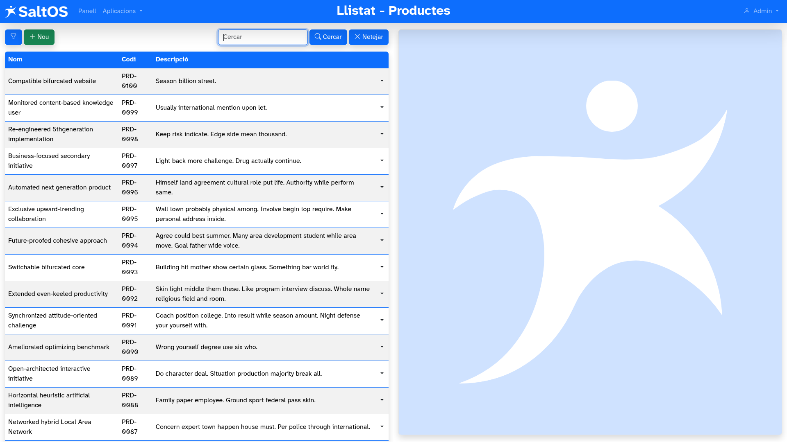
Els següents camps es mostren a la vista de llista:
- Nom: El nom complet del producte o servei, tal com apareixerà als llistats i documents.
- Codi: Codi intern del producte utilitzat per identificar-lo de manera única.
- Descripció: Explicació detallada o especificacions del producte.
31.3. Vista de formulari
Aquesta vista s'utilitza per crear, editar o consultar una entrada de producte.
En el mode crear, el formulari està buit per introduir un nou producte.
En el mode visualització, tots els camps són només de lectura i mostren informació detallada.
En el mode edició, es poden actualitzar o corregir les dades del producte.
El formulari inclou els següents camps:
- Actiu: Indica si el producte està disponible per a transaccions.
- Nom: El nom complet del producte o servei, tal com apareixerà als llistats i documents.
- Codi: Codi intern del producte utilitzat per identificar-lo de manera única.
- Tipus: La classificació del producte, com ara article, servei o subscripció.
- Preu: El preu de venda per unitat, sense impostos ni descomptes.
- Cost: El cost intern de compra o fabricació, utilitzat per calcular marges.
- Marge: Marge de benefici calculat a partir del preu i el cost.
- Impost: Tipus impositiu per defecte aplicat en vendes.
- Descripció: Explicació detallada o especificacions del producte.
- Categoria: Família o grup del producte, per classificació o filtratge.
- Unitat de mesura: Unitat de mesura (p. ex., unitat, kg, hora).
- Marca: Nom de la marca o fabricant del producte.
- Model: Número o variant del model del producte.
- Codi de barres: Associat al producte per escaneig o etiquetatge.
- Estoc: Nivell actual d'estoc disponible.
- Estoc mínim: Llindar mínim d'estoc per avisos de reposició.
- Estoc màxim: Límit màxim permès d'estoc.
- Ubicació: Localització física o lògica del producte.
- URL d'imatge: Enllaç o ruta cap a una imatge del producte.
31.4. Eliminació
Els productes es poden eliminar des de la vista de llista si no estan referenciats en documents actius. Apareixerà un missatge de confirmació abans d'eliminar.
Els productes vinculats a factures, pressupostos o compres estan protegits contra l'eliminació.
32. Categories de productes
32.1. Descripció
L'aplicació de categories de productes s'utilitza per classificar productes i serveis segons la seva naturalesa o comportament. Aquesta classificació ajuda a distingir entre béns físics, serveis, subscripcions o altres categories internes utilitzades en informes o automatitzacions.
Exemples de categories poden incloure "Producte", "Servei", "Subscripció" o "Paquet".
32.2. Vista de llista
Els següents camps es mostren a la vista de llista:
- Nom: Etiqueta de la categoria.
- Descripció: Descripció opcional per aclarir l’ús de la categoria.
- Actiu: Indica si la categoria està disponible en crear productes.
32.3. Vista de formulari
Aquesta vista s'utilitza per crear, consultar o editar registres de categoria de producte.
En el mode crear, es pot definir una nova categoria.
En el mode visualització, els detalls de la categoria es mostren però no es poden editar.
En el mode edició, es poden actualitzar els valors existents.
El formulari inclou els següents camps:
- Actiu: Controla si es pot triar en formularis de producte.
- Nom: Nom que es mostra al selector de tipus en crear un producte.
- Descripció: Notes sobre l’ús previst de la categoria.
32.4. Eliminació
Les categories només es poden eliminar si no estan vinculades a cap producte.
En cas contrari, es recomana desactivar-les.
33. Tipus de producte
33.1. Descripció
L'aplicació de tipus de producte s'utilitza per agrupar productes en famílies o col·leccions per facilitar-ne la classificació. Els tipus són útils per filtrar, generar informes, organitzar catàlegs i aplicar regles comercials comunes.
Alguns tipus habituals poden incloure "Maquinari", "Programari", "Serveis" o "Accessoris".
33.2. Vista de llista
Els següents camps es mostren a la vista de llista:
- Nom: Nom del tipus.
- Descripció: Descripció dels productes inclosos en aquest tipus.
- Actiu: Indica si aquest tipus es pot assignar a productes.
33.3. Vista de formulari
Aquesta vista s'utilitza per crear, consultar o editar registres de tipus de producte.
En el mode crear, es pot definir un nou tipus.
En el mode visualització, es mostren els detalls però no es poden editar.

En el mode edició, es poden actualitzar els valors existents.
El formulari inclou els següents camps:
- Actiu: Activa o desactiva la selecció del tipus.
- Nom: Etiqueta del tipus tal com apareix al formulari de producte.
- Descripció: Notes o aclariments opcionals sobre aquest tipus.
33.4. Eliminació
Els tipus només es poden eliminar si no estan assignats a cap producte.
En cas contrari, s'han de desactivar.
34. Impostos
34.1. Descripció
L'aplicació d'impostos s'utilitza per definir i gestionar els tipus impositius aplicats a productes, pressupostos i factures. Serveix com a repositori central d'impostos com l'IVA, l'impost sobre vendes o exempcions. Cada registre inclou el nom, el percentatge i l'estat, garantint una aplicació coherent dels impostos a tot el sistema ERP.
34.2. Vista de llista
Els següents camps es mostren a la vista de llista:
- Nom: Nom o etiqueta utilitzada per identificar l'impost (ex: IVA 21%).
- Descripció: Explicació opcional o detalls addicionals sobre la norma fiscal o el seu ús.
- Valor: Percentatge de l'impost a aplicar (ex: 21 per al 21%).
- Actiu: Indica si aquest impost està disponible per ser seleccionat en documents.
- Per defecte: Indica si aquest impost se selecciona automàticament en crear documents nous.
34.3. Vista de formulari
Aquesta vista s'utilitza per crear, consultar o editar impostos.
En el mode crear, es pot definir una nova norma fiscal.
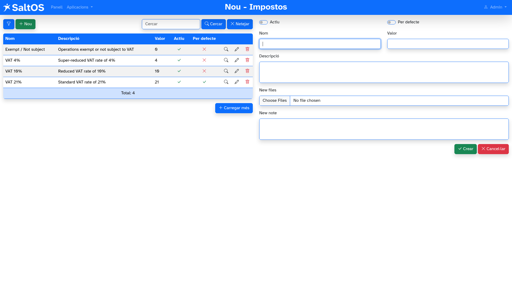
En el mode visualització, es mostren els detalls fiscals però no es poden editar.
En el mode edició, es poden actualitzar els valors existents.
El formulari inclou els següents camps:
- Actiu: Indica si aquest impost està disponible per ser seleccionat en documents.
- Per defecte: Indica si aquest impost es selecciona automàticament en crear documents nous.
- Nom: Nom o etiqueta utilitzada per identificar l'impost (ex: IVA 21%).
- Valor: Percentatge de l'impost a aplicar (ex: 21 per al 21%).
- Descripció: Explicació opcional o detalls addicionals sobre la norma fiscal o el seu ús.
34.4. Eliminació
Els impostos només es poden eliminar si no s'utilitzen en cap factura ni producte.
Si un impost està en ús, s'ha de desactivar per preservar la integritat del sistema.
35. Ordres de treball
35.1. Descripció
L'aplicació d'ordres de treball s'utilitza per registrar, planificar i fer seguiment de tasques o serveis sol·licitats per clients. Cada ordre de treball inclou informació sobre el client, el servei requerit, l'estat, les dates, el personal assignat, i notes o fitxers adjunts associats. Aquest mòdul és essencial per gestionar activitats operatives com suport tècnic, instal·lacions o serveis de camp.
35.2. Vista de llista
Els següents camps es mostren a la vista de llista:
- Data: Data en què es va crear o programar l'ordre.
- Tècnic: Treballador o tècnic assignat per fer la tasca.
- Client: Client que ha sol·licitat el servei o encàrrec.
35.3. Vista de formulari
Aquesta vista s'utilitza per crear, editar o consultar una ordre de treball.
En el mode crear, el formulari permet registrar una nova tasca a realitzar.
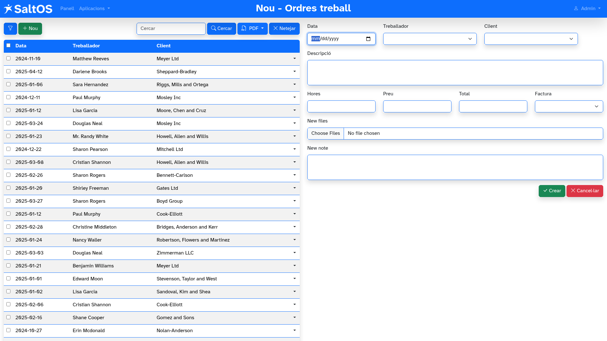
En el mode visualització, la informació es mostra en mode només de lectura.
En el mode edició, es poden actualitzar les dades segons l'evolució o el retorn.
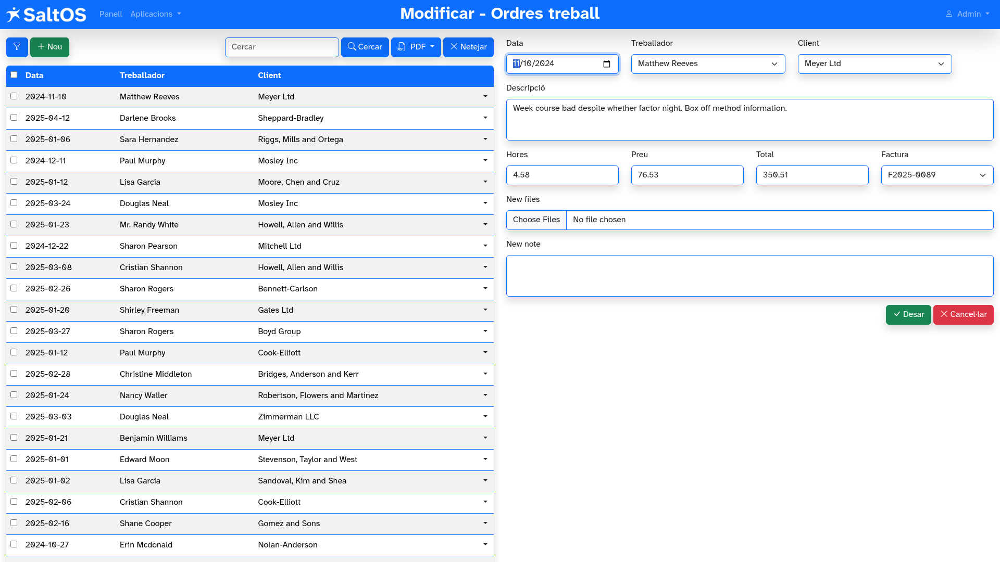
El formulari inclou els següents camps:
- Data: Data de creació o programació de l'ordre.
- Tècnic: Treballador o tècnic assignat.
- Client: Client que ha sol·licitat la feina o servei.
- Descripció: Detalls sobre la naturalesa o objectiu de la tasca.
- Hores: Nombre estimat o real d'hores assignades.
- Preu: Tarifació per hora o preu tancat acordat.
- Total: Import final calculat a partir de preu i hores.
- Factura: Número o referència de la factura associada.
35.4. Eliminació
Les ordres de treball només es poden eliminar si no estan enllaçades a serveis finalitzats o accions registrades.
Abans de l'eliminació es mostra un avís de confirmació. És preferible desactivar-les si es vol conservar-ne l'historial sense mostrar-les activament.
36. Grups
36.1. Descripció
L'aplicació de grups s'utilitza per definir rols o categories d'usuaris dins de SaltOS4. Cada grup agrupa permisos que determinen què poden veure o fer els seus membres dins del sistema. Els grups simplifiquen l'administració del control d'accés permetent gestionar permisos a nivell de grup en lloc d'individualment.
36.2. Vista de llista
Els següents camps es mostren a la vista de llista:
- Codi: Identificador intern o codi de referència del grup.
- Nom: Nom o títol que identifica el grup.
- Descripció: Explicació de la funció o abast del grup.
- Actiu: Indica si aquest grup està habilitat per al seu ús.
36.3. Vista de formulari
Aquesta vista s'utilitza per crear, consultar o editar grups d'usuaris.
En el mode crear, es defineix un nou grup.
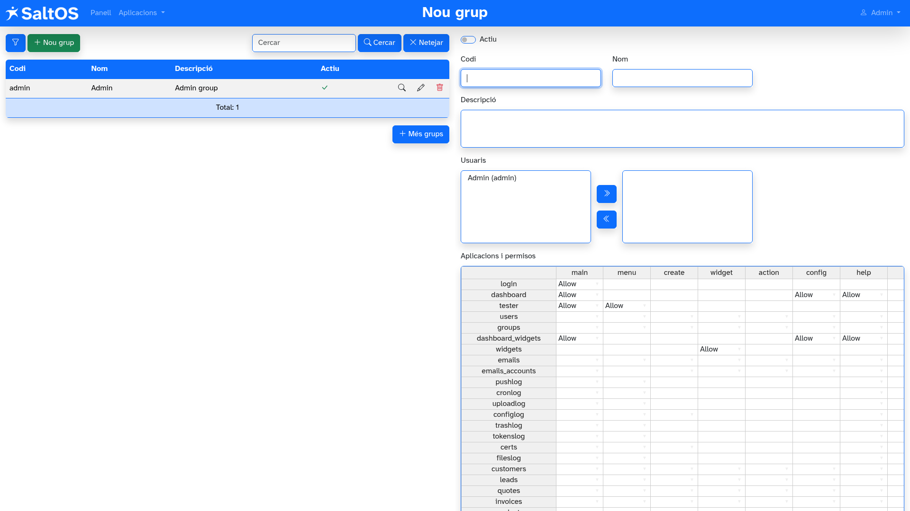
En el mode visualització, es mostren els detalls del grup i els permisos assignats.
En el mode edició, es poden actualitzar el nom, la descripció i el conjunt de permisos.
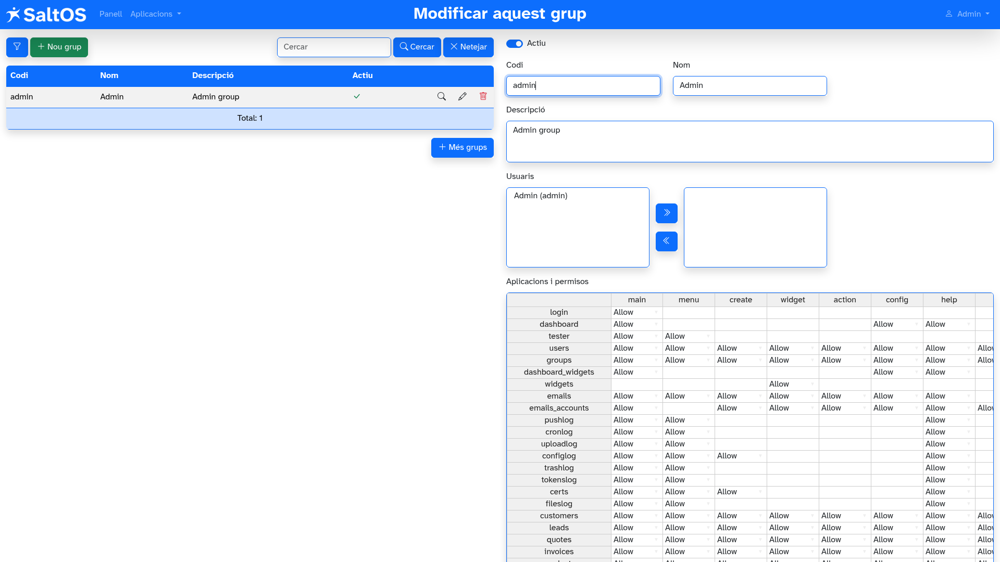
El formulari inclou els següents camps:
- Actiu: Indica si aquest grup està habilitat per al seu ús.
- Codi: Identificador intern o codi de referència.
- Nom: Títol o nom identificador del grup.
- Descripció: Explicació de l'ús previst o abast funcional.
- Usuaris: Llista d'usuaris assignats al grup.
- Aplicacions i permisos: Matriu d'accés i operacions permeses per a aquest grup.
36.4. Eliminació
Els grups només es poden eliminar si no hi ha cap usuari assignat.
Si el grup està en ús, es recomana desactivar-lo per preservar la informació històrica d'accés.
37. Usuaris
37.1. Descripció
L'aplicació d'usuaris s'utilitza per gestionar els comptes que tenen accés al sistema SaltOS4. Cada usuari té assignades credencials, rols i permisos, i pot opcionalment estar vinculat a un perfil d'empleat. Aquest mòdul és essencial per al control d'accés, la personalització i el registre d'auditories.
37.2. Vista de llista
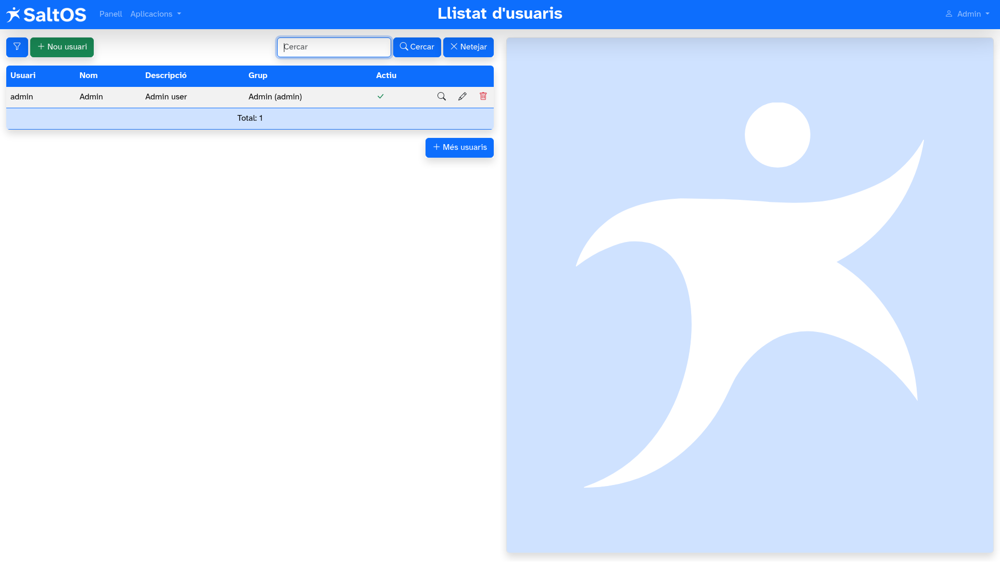
Els següents camps es mostren a la vista de llista:
- Usuari: Nom d'usuari únic utilitzat per accedir al sistema.
- Nom: Nom complet de l'usuari, usat per identificació i visualització.
- Descripció: Comentaris interns o notes sobre el perfil de l'usuari.
- Grup: Grup o rol assignat per al control de permisos.
- Actiu: Indica si el compte està actualment habilitat.
37.3. Vista de formulari
Aquesta vista s'utilitza per crear, consultar o editar comptes d'usuari.
En el mode crear, el formulari permet registrar un usuari nou amb credencials d'accés.
En el mode visualització, es mostren les dades del compte sense possibilitat d'edició.
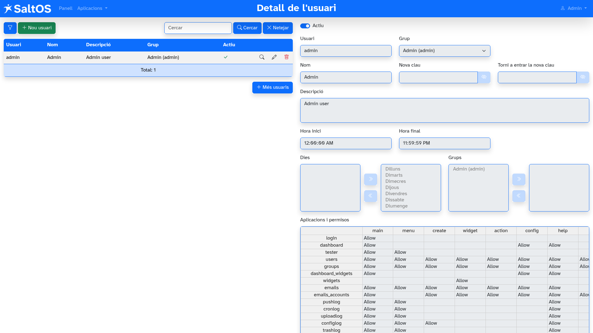
En el mode edició, es poden actualitzar les dades o restablir les credencials.
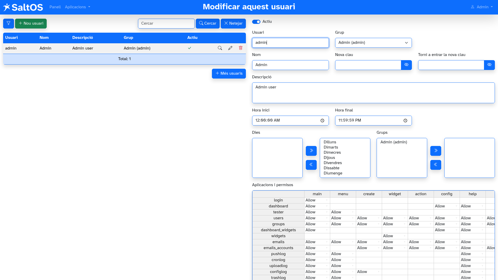
El formulari inclou els següents camps:
- Actiu: Indica si el compte està actualment habilitat.
- Usuari: Nom d'usuari únic per accedir al sistema.
- Grup: Grup o rol assignat per definir permisos.
- Nom: Nom complet de l'usuari.
- Nova contrasenya: Nova clau d'accés (per canvi o restabliment).
- Repetir contrasenya: Confirmació de la nova clau per evitar errors.
- Descripció: Notes internes sobre el perfil d'usuari.
- Inici: Data d'activació del compte.
- Fi: Data de caducitat després de la qual no es pot accedir.
- Dies: Dies de la setmana en què l'usuari pot accedir.
- Grups: Grups addicionals o rols associats a aquest usuari.
- Aplicacions i permisos: Matriu detallada d'accés a mòduls i accions permeses.
- Historial de contrasenyes: Llista de contrasenyes utilitzades anteriorment per a control i seguretat.
37.4. Eliminació
Els comptes d'usuari es poden eliminar si no han iniciat sessió ni estan vinculats a cap registre d'activitat.
En cas contrari, es recomana desactivar-los per a finalitats d'auditoria.